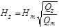
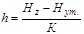
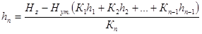

ДЕПАРТАМЕНТ СТРОИТЕЛЬСТВА
НАУЧНО-ТЕХНИЧЕСКОЕ УПРАВЛЕНИЕ
МОССТРОЙЛИЦЕНЗИЯ
ИНСТРУКЦИЯ
по технологии строительства городских дорог в зимнее время
ВСН 51-96
Москва - 1998
Инструкция про технологии строительства городских дорог в зимнее время разработана кандидатами технических наук В.М.Гольдиным, Л.В.Городецким, Р.И.Бега, инженером В.Ф.Деминым (лаборатория дорожного строительства НИИМосстроя), инженером Б.В.Маркиным (ОАО Мосинжстроя), при участии Ю.И.Столярова, к.т.н. В.Д.Фельдмана (Мосстройлицензия).
В Инструкции приведены современные методы и средства для строительства городских дорог в зимнее время.
В Инструкции обобщен производственный опыт по сооружению дорог в зимнее время Главленинжстроя (Санкт-Петербург), Главкиевстроя (Киев), Департамента строительства (Москва).
Инструкция обобщает накопленный за период с 1967 по 1996 гг. опыт службы дорожных одежд на эксплуатируемых улицах и дорогах.
Инструкция согласована с проектным институтом “Мосинжпроект”, ОАО “Мосинжстрой” и трестом “Гордорстрой”.
СОДЕРЖАНИЕ
|
1. |
||
|
2. |
||
|
3. |
||
|
4. |
||
|
5. |
||
|
6. |
||
|
7. |
||
|
8. |
||
|
9. |
||
|
10. |
||
|
11. |
||
|
Расчет толщины утепляемого слоя |
||
|
Рекомендуемые бульдозеры (бульдозерное и рыхлительное оборудование) для разработки мерзлых грунтов в дорожном строительстве |
||
|
Рекомендуемые экскаваторы одноковшовые универсальные со сменным рабочим оборудованием для разработки мерзлых грунтов |
||
|
Технологические возможности гидромолотов при разработке мерзлых грунтов |
||
|
Рекомендуемые экскаваторы непрерывного действия для разработки мерзлых грунтов |
||
|
Техническая характеристика рекомендуемых катков для уплотнения грунтов и щебеночных смесей |
||
|
Рекомендуемые автогрейдеры для производства земляных работ в дорожном строительстве |
||
|
Рекомендуемые стреловые самоходные краны |
||
|
Департамент строительства (Мосстройкомитет) |
Ведомственные |
ВСН 51-96 Департамент строительства (Мосстройкомитет) |
|
Мосстройлицензия |
Инструкция по технологии строительства городских дорог в зимнее время |
Взамен “Указаний по технологии строительства городских дорог в зимнее время” ВСН 3-67 Главмосстроя |
1.1. Инструкция распространяется на строительство в г. Москве дорог различного назначения в зимний период.
1.2. Зимним периодом считается время года между датой наступления нулевой среднесуточной устойчивой температуры осенью и датой наступления той же температуры весной.
1.3. С целью создания заделов по возведению земляного полотна для устройства оснований и покрытий в зимний период максимальное количество земляных работ должно выполняться до наступления отрицательной температуры воздуха.
1.4. Строительство дорог осуществляется в соответствии с проектом производства работ, включающим: генеральный план строящегося объекта; технологическую карту строительства и карты трудовых процессов; календарный график строительства; схемы движения городского и технологического транспорта.
1.5. В проекте производства работ должны быть четкие указания по последовательности выполнения работ, типам и количеству машин и механизмов, материально-техническому снабжению, подготовленности заводов по выпуску смесей и деталей.
|
Внесены |
Утверждены: |
Дата введения
"1" сентября 1996 г. |
2.1. Конструкции дорог и тротуаров включают следующие элементы: подстилающий слой, бортовой камень, технологический слой, основание и покрытие, толщина которых принимается по проекту в соответствии с альбомом типовых конструкций институтов “Мосинжпроект” и НИИМосстроя “Дорожные конструкции для г. Москвы”, СК 6101-85* в зависимости от расчетных нагрузок, интенсивности движения транспорта, грунтовых условий и других факторов.
2.2. Варианты типовых конструкций дорожных одежд представлены на рис. 2.1. Выбор дорожно-строительных материалов для устройства отдельных слоев конструкций определяется видом покрытия.
2.3. Подстилающий слой для всех видов конструкций устаивается из песка (рис. 2.1. А, Б, В, Г).
2.4. Технологический слой выполняется из укатываемого малоцементного бетона марки 1, песчано-гравийной смеси или щебня (рис. 2.1. А, Б, В, Г).
При устройстве покрытий из сборных элементов следует предусматривать дополнительный выравнивающий технологический слой из сухой цементно-песчаной смеси состава 1:10 (рис. 2.1 Б).
2.5. Основание устраивается из уплотняемых щебеночных смесей в соответствии с ТУ 400-24-150-86 и укатываемого малоцементного бетона марок 2, 3, 4, а также пластичного или литого бетона М-200 или М-300 (рис. 2.1 А, Б, В, Г).
2.6. Покрытия возводятся из сборных бетонных, железобетонных и гранитных элементов, а монолитные из пластичной и литой бетонной смеси.
В случае устройства покрытий из литых бетонных смесей по технологическому слою должна быть предусмотрена укладка пергамина или полиэтиленовой пленки (рис. 2.1 В).
2.7. Бетонные покрытия и основания, устраиваемые при отрицательных температурах воздуха, защищают от промерзания при помощи различных теплоизоляционных материалов (рис. 2.1 В, Г). Допускается при двухстадийном строительстве дорог в районах новой жилой застойки и незначительных объемах работ (по специальному распоряжению Мосстройкомитета) по бетонному основанию укладка слоя асфальтобетона (рис. 2.1 А). С наступлением положительных температур в весеннее время укладываются дополнительно еще два слоя асфальтобетона (рис. 2.1 А), а в конструкции с утеплительным слоем после его снятия (рис. 2.1 Г).
2.8. Технологическая последовательность строительства городских дорог различного назначения при отрицательных температурах воздуха должна включать:
- возведение земляного полотна;
- устройство дренажа;
- устройство подстилающего слоя;
- устройство бортовых камней;
- устройство технологического слоя;
- устройство оснований;
- устройство покрытий дорог и тротуаров.
3.1. При выборе способа производства земляных работ при отрицательных температурах воздуха следует сравнивать такие показатели: приведенные затраты, себестоимость работ, производительность комплекта машин, выработку одного рабочего, энергоемкость и металлоемкость на единицу продукции.
3.2. Критерием целесообразности сооружения земляного полотна в зимний период является экономический показатель Эс, выраженный в процентах от общей стоимости строительно-монтажных работ.
Если Эс больше нормативных дополнительных затрат, объемы и организацию зимних работ пересматривают, изменяя набор работ и их объемы.
Рис. 2.1. Дорожные конструкции, применяемые при отрицательной температуре воздуха:
I - работы, выполняемые при отрицательной температуре воздуха; II - работы, выполняемые при положительной температуре воздуха. 1 - песчаный подстилающий слой; 2 - технологический слой; 3 - основания из пластичного, литого, укатываемого малоцементного бетона и уплотняемых щебеночных смесей; 4 - нижний слой покрытия из асфальтобетона; 5 - верхний слой покрытия из асфальтобетона; 6 - сухая цементно-песчаная смесь; 7 - покрытие из штучных элементов; 8 - покрытие из железобетонных плит; 9 - пергамин или полиэтиленовая пленка (при укладке литых бетонных смесей); 10 - бетонное покрытие; 11 - укрытие бетонного покрытия от промерзания; 12 - укрытие бетонного основания от промерзания.
3.3. В случае, если на отдельных строительных объектах невозможна заблаговременная подготовка земляного полотна по организационным или другим причинам, грунт, намеченный к разработке в зимнее время, следует предохранить от промерзания.
3.4. Все мероприятия по предохранению грунта от промерзания должны производиться в начале зимы, т.е. с наступлением легких морозов. Небольшой слой мерзлого грунта (5-10 см) не может служить препятствием для удаления грунта.
3.5. Грунта, подлежащие к разработке в зимнее время, предохраняют от промерзания вспахиванием, боронованием и снегозадержанием; перекрестным рыхлением; утеплением теплоизоляционными материалами.
3.6. Предохранение грунта от промерзания глубиной до 1 м производится вспахиванием грунта на глубину не менее 0,35 м с последующим боронованием на глубину 0,15-0,20 м и снегозадержанием высотою 0,15-0,25 м.
3.7. Предохранение грунта от промерзания глубиной до 1,5 м производится вспахиванием грунта на глубину более 0,35 м перекрестным рыхлением грунта, когда рыхлитель проходит по взаимно перпендикулярным направлениям, где каждая последующая проходка должна перекрывать предыдущую полосу на 0,2 м, после чего проводится укрытие грунта снегом на высоту не менее 0,25 м.
3.8. Рыхление, особенно перекрестное, снижает теплопроводимость грунта благодаря увеличению объема пор, заполненных воздухом, а снегозадержание снижает скорость промерзания примерно в 3 раза по сравнению со скоростью промерзания грунта, непокрытого снегом.
3.9. Вспахивание грунтов сопровождается значительным снижением глубины промерзания (табл. 3.1).
3.10. Утепление грунта производится снегом, теплоизоляционными материалами (опилки, шлак, зола и др.). Для предохранения грунта от промерзания на глубину до 1,4 м, грунт покрывается слоем опилок на высоту 0,35 м и снегом на высоту 0,25 м. Для предохранения грунта от промерзания на глубину до 1,7 м грунт покрывается слоем опилок на высоту 0,45 м и снегом на высоту 0,25 м. В приложении 1 представлен расчет толщины утепляемого слоя.
Глубина промерзания грунта в Московской области
|
Глубина промерзания грунта, по месяцам |
Грунты |
|
|
не вспаханный, см |
вспаханный, см |
|
|
Ноябрь-декабрь |
60 |
20 |
|
Январь-февраль |
140-170 |
80-90 |
|
Март-апрель |
170 |
90-30 |
3.11. Опыт строительства дорог в зимнее время в г. Москве и Московской области показал, что толщина слоя утеплителя, см, по месяцам года должна соответствовать приведенным данным в табл. 3.2.
Толщина слоя утеплителя в зависимости от времени
производства работ
|
Вид утеплителя |
Время производства работ |
||||
|
ноябрь |
декабрь |
январь |
февраль |
март |
|
|
Зола ТЭЦ (сухая) |
15 |
25 |
35 |
40 |
45 |
|
Вспененная синтетическая смола |
1 |
2 |
3 |
4 |
5 |
|
Снег |
13-15 |
21-25 |
31-35 |
35-40 |
38-40 |
|
Опилки |
15 |
25 |
35 |
40 |
45 |
3.12. Химический способ предохранения грунтов от промерзания производится до наступления морозов розливом технических хлористых солей (кальциевых, натриевых, магниевых и др.) по вспаханному грунту. Соль вводят в виде водного раствора с концентрацией до 20 %. Расход раствора зависит от температуры воздуха и применяется в количестве 1-5 кг на 1 м2 поверхности грунта.
3.13. Разработка мерзлого грунта производится баровыми машинами, траншейными экскаваторами, экскаваторами, бульдозерами.
3.14. При механическом способе разработки мерзлого грунта длину захватки определяют с учетом часовой производительности рыхлителей, температуры воздуха и скорости ветра.
3.15. В зависимости от плотности грунта рыхления грунта эффективно производить при глубине промерзания до 0,25 м навесными рыхлителями, смонтированными на базе трактора ДЭТ-250 и др. (приложение 2).
3.16. Промерзший грунт на глубину до 0,8 м может быть разрыхлен при помощи трактора-рыхлителя. Теоретически и практически определено, что мощность трактора-рыхлителя следует выбирать в зависимости от толщины промерзшего грунта (табл. 3.3).
Зависимость необходимой мощности трактора-рыхлителя
от глубины промерзания грунта
|
Глубина промерзания, м |
0,3-0,4 |
0,5-0,7 |
0,7-0,8 |
|
Необходимое тяговое усилие трактора, кН |
100-120 |
150-200 |
250-300 |
3.17. При глубине промерзания грунта более 0,8 м применяют оборудование ударного или виброударного действия (гидромолоты), смонтированное на экскаваторах ЭО-2621, ЭО-2626, ЭО-2629 или другого типа (приложение 3).
Технические возможности гидромолотов представлены в приложении 3а.
3.18. Выемки шириной 2,6 м или кратно этому разрабатывают фрезерной машиной на тракторе в комплекте с бульдозером.
3.19. Щели глубиной до 3 м нарезают баровыми машинами, которые представляют собой навесное оборудование на базе трактора или экскаватора. В дальнейшем мерзлый грунт между щелями удаляют землеройными машинами. Наиболее перспективны для нарезания щелей экскаваторы непрерывного действия ЭТР-223А, ЭТР-224А и др. (приложение 4).
3.20. При плотных грунтах и глубине промерзания более 1,0 м необходимо нарезать не только продольные, но и поперечные щели. Поперечные щели нарезают под углом 6-90° к продольным. После окончания нарезки щелей мерзлый грунт разрабатывают бульдозерами или экскаваторами.
3.21. Разработка грунта на глубину до 2 м траншейным экскаватором ЭТР-223А, специальной установкой БГМ-10 и др. ведется путем нарезки в грунте параллельных траншей на расстоянии 0,3-0,4 м друг от друга. Каждая траншея заполняется грунтом при рытье последующей. Оставшиеся гребни грунта разрабатывают бульдозерами или экскаваторами.
3.22. Для нарезания щелей в мерзлом грунте на глубину 1,5 м применяется экскаватор непрерывного действия с баровым оборудованием ЭТЦ-1609БД, траншейная машина ТМК-2А на базе колесного тягача КЗКТ-538Д с бульдозерным оборудованием и др.
Последующая разработка оставшихся гребней производится бульдозерами или экскаваторами.
На рис. 3.1 представлена классификация машин для разработки мерзлых грунтов.
3.23. Оттаивание мерзлых грунтов применяется при небольших объемах работ (земляных) в близком к месту производства работ расположении трубопроводов, кабелей и зданий. Оттаивание может производится: электричеством, паром и горячей водой, термохимическим и огневым способом.
3.24. Для оттаивания грунта на глубину до 1,5 м применяются трубчатые электронагреватели (ТЭНы), выполненные из стальной цельнонатянутой трубки диаметром 13 мм, внутри которой в изоляционном порошке магнезия-уста помещена нихромовая спираль.
В зависимости от глубины промерзания грунта оттаивание его производится горизонтально или вертикально расположенными ТЭНами. Прогрев грунта при помощи вертикальных и горизонтальных ТЭНов ведут циклами. Цикл, повторяющийся трижды, включает 2 часа прогрева и 4 часа термосного выдерживания при отключенных ТЭНах. К разработке прогретого грунта следует приступать не позднее 16-24 часов после окончания прогрева.
Рис. 3.1. Классификация машин для разработки мерзлых грунтов
3.25. При отсутствии подземных коммуникаций в местах производства работ и глубине промерзания более 1 м отогрев грунта производится вертикально установленными ТЭНами. Для установки вертикальных ТЭНов в мерзлом грунте предварительно бурят шпуры диаметром 65-80 мм и глубиной 0,7-08 толщины промерзшего слоя.
3.26. Радиус действия вертикально установленного ТЭНа при полном цикле прогрева и термосном выдерживании (для дальнейшего сохранения тепла применяют теплоизолирующие материалы) составляет 45-60 см.
3.27. При глубине промерзания до 0,8-1 м и близком расположении подземных коммуникаций от места производства земляных работ мерзлый грунт отогревают горизонтальными ТЭНами (по конструкции подобны ТЭНам, применяемым для вертикального прогрева), вмонтированным в металлический теплоизолирующий короб. Короба устанавливаются в несколько рядов. Расстояние между рядами зависит от вида, влажности грунта, глубины промерзания и составляет для песчаных грунтов 50-60 см, а для глинистых 30-40 см.
3.28. Прогревание грунта горячей водой производится при помощи водяных циркуляционных игл, позволяющих производить оттаивание на глубину более 1 м. Подогретая в котле вода при помощи центробежного насоса подается через патрубок во внешнюю трубу иглы и по внутренней трубе возвращается снова в котел. Количество водяных циркуляционных игл определяется в зависимости от размеров отогреваемой площади и расстояний между иглами, которые находятся в пределах 0,75-1,5 м.
3.29. Время оттаивания массива грунта водяными циркулярными иглами составляет более суток. Для соблюдения непрерывности разработки иглы следует устанавливать секциями на нескольких участках. Площадь оттаивания на каждом участке должна быть равной площади забоя, разрабатываемого экскаватором в течение суток.
3.30. Паровые иглы позволяют производить оттаивание грунта на глубину более 1 м. Иглы следует вставлять в пробуренные скважины, которые во избежание утечки пара закрываются специальными колпачками. Продолжительность выдерживания иглы под паром в скважине составляет: в песчаных грунтах 2-3 часа, в суглинках 3-4 часа и в глинистых 4-6 часов. Пуск пара в грунт следует производить с одночасовыми и двухчасовыми перерывами. Радиус действия одной паровой иглы при работе ее в течение 8-10 часов составляет 0,5-0,7 м. Отогретый участок после прекращения пуска пара и уборки следует на некоторое время покрыть утепляющим материалом (матами, опилками и пр.) для предупреждения охлаждения грунта и обеспечения распространения в нем тепла.
3.31. Для питания игл следует применять пар с давлением 1,5-2 атм. Повышение давления пара сверх указанных пределов усиливает эффект оттаивания, но значительно увеличивает потери пара через скважины и зазоры и создает угрозу разрыва шлангов. При глубине промерзания до 1,5 м давление пара должно составлять 0,5-0,7 атм. Оттаивание грунта с применением пара должно осуществляться лишь в исключительных случаях во избежание насыщения основания водой, нарушения структуры и понижения несущей способности грунта.
3.32. Оттаивание грунта на глубину до 1,5 м может производиться термохимическим способом. Он заключается в использовании тепла, возникшего в процессе гашения извести. Негашеную известь рассыпают на мерзлый грунт слоем 8-10 см. Сверху рассыпают опилки или другой термоизолирующий материал слоем 20-23 см. Выделение тепла начинается при увлажнении извести.
3.33. Огневое оттаивание грунтов может производиться с использованием твердого, жидкого и газообразного топлива, также при помощи комплекта полутруб (коробов) высотой 500-600 мм и длиной до 2 м из листовой стали толщиной 1,5-2,6 мм, укладываемых общей длиной 10-30 м, образующих каналы для циркуляции горячих газов, возникающих при сжигании топлива.
Сверху полутрубы засыпаются шлаком или землей для уменьшения потерь тепла в атмосферу. После 4-5 часов работы форсунку (топливо жидкое) перемещают на следующий участок, внутри канала аккумулируется тепло и дальнейшее прогревание грунта происходит без сгорания топлива. Через 12-15 часов грунт под трубами оттаивает на глубину 1-1,5 м. Огневой способ оттаивания грунтов, как мало эффективный и неэкономичный, допускается лишь в исключительных случаях при незначительных объемах работ.
3.34. В новых районах строительства при больших объемах земляных работ (не менее 1000 м3) и глубине промерзания более 0,6 м наиболее целесообразным и эффективным является взрывной способ рыхления мерзлых грунтов.
3.35. Выбор способа производства работ зависит от глубины промерзания. При глубине промерзания до:
1,5 м - способ шпуровых зарядов с диаметром шпуров 30-50 мм;
2 м - способ шпуровых зарядов с диаметром шпуров 60-75 мм;
3.36. Бурение шпуров в мерзлых грунтах производится передвижными буровыми станками, электро- и пневмосверлами, трубками с отогретым сжатым воздухом, вибропогружателями, винтообразными или двухлопастными буравами и др.
Перед началом бурения площадка расчищается от снега, а верхняя бровка забоя от навала породы, и разбивается сетка шпуров или скважин согласно принятой схеме их размещения.
Шпуры и скважины располагаются в шахматном порядке. Направление бурения шпуров и скважин вертикальное. При рыхлении мерзлой корки в откосе и лобовой части забоя применяются наклонные шпуры, перпендикулярные поверхности мерзлого слоя.
Величина заряда Q определяется по формуле:
Q=Kh3,
где: К - удельный расход ВВ для зарядов рыхления, кг/м3;
h - толщина мерзлого слоя, м.
Значение К при аммонитах № 7 и 9 принимается: для растительного и песчаного грунтов 0,4, для глинистых грунтов со строительным мусором - 0,6.
3.37. Воспрещается зимой применение динамита, сельвелита, других ВВ, содержащих большое количество нитроглицерина, так как при температуре наружного воздуха от минус 12 до минус 18 они легко взрываются от трения.
3.38. Для ограничения распространения взрывной волны и разлета кусков гранита при взрыве применяются различные типы специальных металлических укрытий: овальной формы размером 4´2,2 м или прямоугольного короба в виде домика размером 5´3 м, позволяющие производить взрывы на расстоянии 50 м от жилых домов.
3.39. Взрывные работы должны выполняться специализированными организациями согласно "Единым правилам безопасности при взрывных работах".
3.40. Возведение насыпей допускается при наличии необходимого количества уплотняющих средств, обеспечивающих быстрое уплотнение отсыпанного грунта до требуемого значения плотности (табл. 3.4).
3.41. Насыпи, как правило, должны возводиться только из талого грунта с обязательным уплотнением до наступления смерзания насыпного грунта. Ввиду трудностей выдерживать это требование в течение всего зимнего периода допускается отсыпка высоких (более 1,5 м) насыпей из смеси талого и мерзлого грунтов (табл. 3.5).
Условия применения грунтов в насыпях, возводимых в зимнее время
|
Вид грунта |
Условия применения |
Допускается высота насыпи, м |
|
Скальный и крупноблочный, крупный и средней крупности песок |
Применяют без ограничений |
Без ограничений |
|
Глинистый |
Допускается с влажностью не более 1,1 от оптимальной |
В зависимости от климата района: |
|
Мелкий и пылеватый, не водонасыщенные пески |
Допускается при влажности не более 1,2-1,3 от оптимальной |
То же |
|
Жирные глины, меловые, тальковые и трепельные грунты, а также грунты с высокой влажностью |
Применять запрещается |
Рекомендуемая высота насыпи при производстве работ
в зимнее время
|
Средняя температура воздуха за период производства работ по отсыпке насыпей, град. |
-5 |
-10 |
-15 |
-20 |
|
Рекомендуемая высота насыпи, м |
не ограничена |
4,5 |
3,5 |
2,5 |
Насыпи высотой менее 1,5 м должны возводиться из талых грунтов при влажности, близкой к оптимальной.
3.42. Содержание мерзлого грунта в насыпи допускается до 20 % с размером комьев не более 15 см при уплотнении катками весом 25-40 т на пневматических шинах и с размером комьев до 20 см при уплотнении трамбующими машинами, катками с падающими грузами.
3.43. Отсыпку насыпи следует производить слоями с уклоном 2-3 % на всю ширину с обеспечением стока воды с поверхности земляного полотна (в случае если строительство основания дороги будет осуществляться весной) и возможности механизированной очистки от снега.
3.44. Отсыпанный грунт сразу же разравнивается бульдозерами толщиной слоя, не превышающим возможности уплотняющих машин. Не допускается скопление комьев мерзлого грунта при отсыпке насыпей.
3.45. Длина участков отсыпаемых насыпей и уплотняющие средства должны быть выбраны так, чтобы окончательное уплотнение грунта в насыпи заканчивалось не позднее 3 часов при температуре воздуха до -10 и не позднее 2 часов - до -20° после выемки грунта в резерве или грунтовом карьере (табл. 3.6).
Время уплотнения грунта в насыпи в зависимости от
температуры воздуха
|
Температура наружного воздуха в град. |
-5 |
-10 |
-20 |
-30 |
|
Время начала смерзания грунта в мин. |
90-120 |
60-90 |
40-60 |
20-30 |
3.46. Уплотнение грунтов в насыпях должно осуществляться до достижения коэффициента уплотнения не менее 0,98, для чего верхние слои насыпи толщиной 1,5 м должны отсыпаться из талых грунтов.
3.47. Катки для уплотнения грунтов выбирают в зависимости от вида грунта и толщины слоя отсыпки в соответствии с табл. 3.7.
Катки для уплотнения грунтов
|
Модель, тип, марка |
Основные конструктивные особенности |
Масса, т |
Глубина уплотнения (в плотном теле), м |
|
|
связный грунт |
несвязный грунт |
|||
|
ДУ-65 |
Самоходный пневмоколесный на спецшасси |
10-12 |
0,20 |
0,25 |
|
ДУ-71 |
Самоходные вибрационные комбинированного действия |
17-25 |
0,50 |
0,60 |
|
ДУ 58А |
16 |
0,40 |
0,60 |
|
|
ДУ-64 |
8,5-9,5 |
0,30 |
0,50 |
|
|
ДУ-70 (ДУ-74-1-кулачковый) |
Вибрационные прицепные (агрегатируемые) с тракторами Т-150К и К-701М, К-702М |
6,5-7 |
0,25 |
0,40 |
|
ДУ-74 (ДУ-74-1-кулачковый) |
8-9 |
0,30 |
0,50 |
|
|
К-701М-ВК (в т.ч. кулачковый) |
24,9 |
0,40 |
0,60 |
|
|
КО-2 |
12 |
0,30 |
0,50 |
|
|
У6710.01 |
13 |
0,40 |
0,60 |
|
|
ДУ-62А |
13 |
0,40 |
0,60 |
|
Примечание. Технические характеристики катков приведены в приложении № 5.
3.48. Уплотнение грунта прицепными катками выполняется круговыми проходами по рабочей захватке. Укатка производится от краев насыпи к ее середине с перекрытием уплотняемых смежных полос на 0,15-0,25 м. Для предотвращения обрушения откосов кромка вальца не должна быть ближе 0,3 м от бровки отсыпаемого слоя. Укатку самоходными катками следует производить по челночной схеме.
3.49. Работы по возведению земляного полотна должны непрерывно контролироваться лабораторией, для чего непосредственно на месте работ организуются специальные контрольные посты.
3.50. В задачу контрольных постов входит следующее:
а) непрерывный контроль за влажностью и плотностью грунтов, укладываемых в насыпь;
б) определение режима работ уплотняющих машин (толщина уплотняемого слоя и число проходов) устанавливается непосредственно на месте работ опытным уплотнением по результатам определения объемного веса проб грунта;
в) осуществление контроля за качеством уплотнения грунтов путем наблюдения за точным выполнением определенного режима работы машин и испытания плотности не менее трех образцов грунта на каждые 200 м насыпи;
г) количество мерзлого грунта не должно превышать пределов, указанных в п. 3.42, контрольные пробы отбираются до уплотнения грунта из каждых 200-300 м3.
3.51. Взятие проб для определения объемного веса мерзлого грунта следует производить путем вырубки монолитов объемов не менее 300 см3, а в случае грунтовой смеси или талого грунта целесообразно применять стальные цилиндры объемом около 2-3 л.
3.52. В конце зимы, когда уже намечаются оттепели, земляное полотно следует тщательно очистить от снега и льда. Во время таяния снега необходимо обеспечить непрерывный и беспрепятственный сток воды.
4.1. Отвод воды, поступающей к песчаному подстилающему слою, производится продольными и поперечными дренами, выполненными из трубофильтров. Работы по устройству трубчатого дренажа выполняются непосредственно перед распределением подстилающего слоя.
4.2. Траншеи под трубчатый дренаж следует выполнить до наступления заморозков при помощи автогрейдера ДЗ-180А и др. (приложение 6) с навесным оборудованием или при помощи экскаваторов ЭО-2621, ЭО-2626 с трапецеидальным ковшом. Укладка труб в траншею производится вручную или при помощи автокранов.
4.3. В том случае, когда грунт промерз, а необходимо производить дренажные работы, грунт прогревают одним из способов, указанных в главе 3 настоящих рекомендаций, после чего его удаляют и создают траншею (ровик) для укладки труб.
4.4. Технологический процесс устройства дренажей мелкого заложения включает: рытье ровика; устройство в нем подушки под трубы; укладку труб с фильтрами; сопряжение трубчатых дрен с водоприемниками; заполнением ровика песком и его уплотнение. Трубы с раструбами или трубофильтры обращают против уклона раструбами и пазами.
4.5. Особое внимание должно уделяться уплотнению дна ровика. Уплотнение производят электротрамбовкой. В крайнем случае уплотняют грунт несколькими проходами заднего колеса автогрейдера тяжелого типа.
4.6. В процессе устройства дренажей заложения проверяют: уклон подушки, предназначенной для укладки труб; качество фильтров обсыпок (соответствие их геометрических размеров проектным и крупность каменного материала обсыпки), плотность соединения звеньев труб в стыках, в том числе трубофильтров с полимерными муфтами; гранулометрический состав и коэффициент фильтрации; толщину слоя песка; влажность и степень увлажнения песка.
4.7. Для устройства дренажей эффективно применение геотекстиля. Геотекстиль-дорнит поставляют, как правило, в рулонах массой до 80 кг с длиной полотна в рулоне не менее 40 м и шириной не менее 1,5 м. Дорнит может применяться как противозаплывающий материал в дренаже мелкого заложения, так и в совмещенной конструкции дренирующего слоя и дренажа мелкого заложения (рис. 4.1). Технические требования к геотектилю-дорниту приведены в табл. 4.1.
Рис. 4.1. Совмещенная конструкция дренирующего слоя и дренажа мелкого заложения с применением геотекстиля.
Технические требования к геотекстилю-дорниту
|
Наименование показателей |
Тип дорнита |
||
|
Ф-1 |
Ф-2 |
Ф-3 |
|
|
Разрывная прочность, кН, на 1 м ширины полотна |
10-25 |
7-10 |
3-10 |
|
Разрывное удлинение, % |
10-80 |
60-100 |
60-100 |
|
Прочность на раздир, Н |
250-350 |
150-200 |
140-170 |
|
Прочность на продавливание, кН |
400-450 |
300-350 |
200-250 |
|
Ширина полотнищ, не менее, м |
1,7 |
2,2 |
2,2 |
|
Их длина в рулоне, м |
100 |
100 |
100 |
|
Поглощение воды, % |
600-700 |
600-700 |
600-700 |
|
Коэффициент фильтрации в уплотненном слое дорнита, не менее, м/сут |
25-30 |
30-40 |
30-40 |
5.1. К устройству песчаного подстилающего слоя приступают после устройства земляного полотна и дренажа. Толщина подстилающего слоя назначается по проекту в зависимости от грунтовых условий. Коэффициент фильтрации песка должен быть не менее 3 м/сут.
5.2. Для устройства песчаного подстилающего слоя необходимо выполнить следующие работы:
- очистку земляного корыта от снега и льда;
- проверку уплотненного корыта шаблоном с уровнем, копирующим поперечный профиль дна корыта;
- разравнивание песка для создания слоя требуемой толщины при помощи бульдозеров, автогрейдеров;
- уплотнение песка пневмокатками, виброкатками.
Коэффициент уплотнения должен быть не менее 0,98;
- произвести планировку поверхности по рейкам с целью придания слою требуемого поперечного профиля.
5.3. Для предотвращения смерзания песка его транспортировку необходимо осуществлять в большегрузных автосамосвалах.
5.4. Устройство подстилающего слоя следует производить с расчетом завершения уплотнения песка до начала его смерзания.
Для предотвращения смерзания песка его пропитывают 2 %-ным раствором хлористого кальция (СаCl2). Допустимые промежутки времени с момента начала распределения песка по земляному полотну до уплотнения его в пределах требований норм приведены в табл. 5.1.
Время завершения уплотнения песчаного слоя в зависимости от температуры воздуха
|
Температура воздуха, град |
Допустимое время, час |
||
|
от |
до |
без добавки СаCl2 |
с добавкой 2% СаCl2 |
|
-2 |
-10 |
1,5-2 |
2-3 |
|
-10 |
-15 |
1-1,5 |
1,5-2 |
|
ниже -15 |
- |
не более 1 |
не более 1,5 |
Примечание. В ветренную погоду время укладки должно быть сокращено в 1,5-2 раза.
5.5. Потребное количество хлористого кальция на 1 м2 поверхности подстилающего слоя при объемной массе песка Vо=1700 кг/м3 приведено в табл. 5.2.
Расход хлористого кальция на 1 м 2подстилающего слоя
|
Содержание безводного СаCl2 в 1 л раствора, % |
Глубина пропитки, см |
Количество СаCl2, кг/м2 |
|
2 |
15 |
5 |
|
2 |
30 |
10 |
5.6. При устройстве песчаного слоя необходимо проверять:
- качество песка путем выборочного взятия образцов и испытания их в лаборатории;
- правильность планировки и соответствия поперечных уклонов проектным;
- толщину слоя по оси и у кромок проезжей части не реже, чем через 50 м;
- качество уплотнения грунта путем определения объемной массы образцов песка, отобранных не менее одного на 50 м дороги и сопоставления с требуемой плотностью.
Не допускается:
- загрязнение песка при разравнивании и уплотнении;
- попадание снега в песок;
- движение транспорта по законченному подстилающему слою.
6.1. Бортовые камни, применяемые в московском строительстве, изготавливают из горных пород (ГОСТ 6666-91), из бетона и железобетона (ГОСТ 6665-91).
6.2. Бортовые камни устанавливают: при одностадийном строительстве дороги после устройства песчаного подстилающего слоя, при двухстадийном строительстве - перед началом выполнения работ на 2-й стадии.
6.3. Перед установкой бортового камня на выровненный и уплотненный песчаный подстилающий слой устанавливается опалубка. Высота опалубки 20 см, а ее ширина на 20 см больше ширины бортового камня.
6.4. Установка метровых бортовых камней производится бортоукладчиками или вручную с помощью специальных приспособлений. Бортовой камень устанавливается по натянутому между металлическими штырями шнуру на бетонное основание толщиной 10 см. Бортовой камень осаживается до уровня натянутого шнура деревянной трамбовкой. После установки бортового камня с двух его сторон устраивается бетонная обойма в опалубке на высоту 10 см. Бетонную обойму необходимо предохранить от промерзания.
6.5. Длиномерные бортовые камни устанавливаются на песчаное основание автокранами грузоподъемностью 3-5 т или при помощи пневмоколесных погрузчиков ТО-30 грузоподъемностью 2,2 т и ПК-271 грузоподъемностью 2,7 т.
6.6. Швы между бортовыми камнями заполняются цементным раствором состава 1:4, после чего расшиваются цементным раствором 1:2.
7.1. Все виды дорожных оснований укладываются на технологический слой, выбор материалов для которых определяется проектом.
7.2. При устройстве технологического слоя из песчано-гравийной смеси применяется следующий ее состав: фракции 5-40 мм - 50-70 %; фракции 0,071-5 мм - 30-50 %; фракции малые 0,071 мм - 5-7 %.
Доставленная на объект смесь разравнивается бульдозером или автогрейдером способом "от себя" и укатывается 5-12-тонными катками до коэффициента уплотнения не менее 0,98.
Толщина слоя в плотном теле должна составлять 15 см.
7.3. Технологический слой из малоцементного укатываемого бетона марки 1 устраивается по той же технологии, что и дорожные основания.
Толщина технологического слоя должна составлять 12-15 см.
7.4. Технологический слой из щебня устраивается из известкового щебня прочностью не менее 400 кгс/см2.
Укладка щебня производится щебнеукладчиком или автогрейдером способом "от себя" и уплотняется 5-12-тонными моторными катками.
Состав щебеночной смеси приведен в таблице 7.1.
7.5. Основания из уплотняемых щебеночных смесей, выполненных в соответствии с требованиями ТУ 400-24-150-86, изготавливают на заводе путем смешивания требуемого количества различных фракций известнякового щебня или гравия до получения однородного материала с добавлением оптимального количества воды.
7.6. Зерновой состав смесей, предназначенных для устройства оснований и технологического слоя, должен отвечать требованиям табл. 7.1.
Зерновой состав щебеночных смесей для оснований и
технологического слоя
|
Конструктивный слой |
Тип смеси |
Содержание в смеси частиц, % массы, проходящих через сито с размером отверстий, мм |
|||||||
|
70 |
40 |
20 |
10 |
5 |
0,63 |
не менее 0,05 |
|
||
|
Основание |
Крупнозернистая,1 |
80-100 |
40-50 |
20-30 |
15-25 |
12-20 |
5-10 |
0-3 |
|
|
То же,II |
85-100 |
60-70 |
40-50 |
30-40 |
20-30 |
5-15 |
0-5 |
|
|
|
Среднезернистая,1 |
- |
85-100 |
40-50 |
20-30 |
15-25 |
7-10 |
1-5 |
|
|
|
То же,II |
- |
- |
85-100 |
60-70 |
40-50 |
15-20 |
2-5 |
|
|
|
Технологический слой |
Крупнозернистая |
80-100 |
65-80 |
50-70 |
35-60 |
25-40 |
10-20 |
0-3 |
|
|
Среднезернистая,1 |
- |
80-100 |
65-80 |
50-70 |
35-50 |
10-20 |
0-3 |
|
|
|
То же,II |
- |
- |
80-100 |
50-80 |
30-50 |
15-25 |
0-3 |
|
|
7.7. В зависимости от крупности зерен щебень подразделяется на следующие фракции: 5-10 (3-10) мм, 10-20 мм, 20-40 мм, 40-70 мм.
Допускается для изготовления смесей применять щебень или гравий, состоящий из большого числа фракций, например: 5-20 и 5-40; 5-10, 5-20, 20-40 мм.
7.8. Щебень должен иметь марки: оснований по механической прочности - по дробимости при сжатии в цилиндре не ниже 600, по морозостойкости не ниже 50; для технологического слоя по прочности не ниже 400, по морозостойкости не ниже 25 (ГОСТ 8269-82*).
7.9. Дорожные основания из щебеночных смесей устраиваются в следующей последовательности: смеси с завода к месту работ доставляются автомобилями-самосвалами и выгружаются в приемный бункер самоходного распределителя или на подготовленное земляное полотно. При отсутствии распределителя можно применять бульдозеры и автогрейдеры.
Уплотнение щебеночного основания производится самоходными катками с металлическими вальцами, а также катками вибрационными и на пневматических шинах.
7.10. Число полос укладки щебня по ширине проезжей части принимается с учетом ширины распределителя и необходимости перекрытия каждой полосы минимально на 5 см.
7.11. Укатку основания следует производить от бортов к оси проезда, причем каждый последующий след должен перекрывать предыдущий на 20-25 см.
Основание из щебеночных смесей уплотняют самоходными катками не менее чем за 10 проходов. Тип катка выбирают в зависимости от толщины уплотняемого слоя согласно табл. 7.2.
Катки для уплотнения оснований щебеночных смесей
|
Модель, тип, марка |
Основные конструктивные особенности |
Масса, т |
Толщина уплотняемого слоя (в плотном теле), м |
|
ДУ-47Б-1 |
Самоходный, статический, с гладкими вальцами |
6 |
0,10 |
|
ДУ-63-1 |
10 |
0,14 |
|
|
ДУ-73-1 |
5-5,5 |
0,10 |
|
|
ДУ-54М |
Самоходный, вибрационный, с гладкими вальцами |
1,5-2,2 |
0,10 |
|
ДУ-47Б |
6 |
0,20 |
|
|
ДУ-73 |
5-5,5 |
0,15 |
|
|
ДУ-63 |
8-10 |
0,20 |
|
|
ДУ-74 |
8-9 |
0,20 |
|
|
ДУ-64 |
Самоходный, комбинированного действия |
8,5-9,5 |
0,20 |
|
ДУ-58А |
16 |
0,30 |
|
|
ДУ-65 |
Самоходный пневмоколесный на спецшасси |
10-12 |
0,15 |
|
ДУ-70 |
Вибрационный прицепной (агрегируемый) к трактору Т-150К |
6,5-7 |
0,20 |
|
КО-2 |
12 |
0,25 |
|
|
У 6710-01 |
13 |
0,25 |
7.12. Проверка плотности основания производится тяжелым катком, после прохода которого не должен оставаться след.
7.13. В процессе работы следует вести контроль за толщиной укладываемого щебеночного слоя, ровностью, соблюдением продольных и поперечных уклонов.
7.14. Устройство покрытия по щебеночному основанию, выполненному в зимних условиях, производится, как правило, весной после его оттаивания и дополнительного уплотнения.
Технические характеристики катков приведены в приложении № 4.
7.15. Основание и подстилающий слой могут устраиваться из укатываемого малоцементного бетона, который подразделяется на марки -1, 2, 3, 4. Их техническая характеристика представлена в табл. 7.3.
Характеристика укатываемого малоцементного бетона
|
Марка укатываемого бетона |
Предел прочности, кгс/см2 |
Назначение |
|
|
при сжатии |
на растяжение при изгибе |
||
|
1 |
75 |
10 |
Для оснований тротуаров, технологического слоя |
|
2 |
100 |
16 |
Для оснований улиц и дорог общегородского и районного значения (в том числе скоростных дорог, магистральных улиц) |
|
3 |
200 |
24 |
Для оснований при двухстадийном строительстве улиц и дорог в районах массовой жилой застройки |
|
4 |
300 |
32 |
|
Примечание. Марка укатываемого бетона по морозостойкости должна быть не ниже 50 для марки 1 и не ниже 100 для марок 2, 3, 4.
7.16. Укатываемый бетон является разновидностью тяжелых цементных бетонов, отличающихся от них значительно меньшим содержанием цемента и воды, что позволяет повысить его упругопластичные свойства.
7.17. Для приготовления смеси укатываемого бетона рекомендуется применять портландцемент марки 400-500, удовлетворяющий требованиям ГОСТ 10178-85. Модуль крупности песка должен быть не менее 2. Природный песок по зерновому составу должен применяться только крупно- или среднезернистым в соответствии с требованиями ГОСТ 8736-85 и ГОСТ 10268-80*. Крупный заполнитель должен отвечать требованиям ГОСТ 8267-93 “Щебень и гравий из плотных горных пород для строительных работ. Технические условия”. Для приготовления смеси марок 1 и 2 применяется известняковый щебень, щебень из гравия и гравий с пределом прочности при сжатии не менее 40 МПа (400 кгс/см2) и маркой по дробимости 24. Для приготовления смесей марок 3 и 4 применяется фракционированный щебень 5-10, 10-20, 20-40 мм из горных пород по прочности на сжатие не ниже 600, по дробимости не более 16. Допускается применение щебня непрерывной гранулометрии фракции 5-40 мм. Для приготовления смесей укатываемого бетона применяется водопроводная вода.
7.18. Устройство оснований из литых бетонных смесей должно осуществляться также, как устройство покрытий из литых бетонных смесей (гл.8).
7.19. При устройстве оснований из бетонных смесей в условиях отрицательных температур рекомендуется применять противоморозные добавки: хлористые соли натрия и кальция (ХН, ХК), нитрата натрия (НН) и нитрит-нитрат-хлоридкальция (ННХК), оптимальное количество которых представлено в табл. 7.4.
Оптимальное количество противоморозных добавок для
смесей, твердеющих при отрицательных температурах
|
Температура твердения бетона, °С |
Содержание безводных солей, % от массы цемента |
|||
|
ХН (NaCl) |
ХК (CaCl2) |
НН (NaNO2) |
ННХК |
|
|
-5 |
2 |
2 |
- |
- |
|
-5 |
3 |
- |
- |
- |
|
-5 |
- |
- |
4 |
- |
|
-5 |
- |
- |
- |
2 |
|
-10 |
- |
4 |
- |
3 |
|
-10 |
5 |
- |
- |
- |
|
-10 |
- |
8 |
- |
- |
|
-10 |
- |
- |
6 |
- |
|
-15 |
- |
- |
8 |
- |
|
-15 |
- |
- |
- |
6 |
7.20. Бетонная смесь должна доставляться на строительный объект главным образом в автобетоносмесителях, по часовому графику, разработанному с учетом производительности укладочных машин и температуры воздуха. Время транспортирования смеси укатываемого бетона не должно превышать 60 минут.
7.21. Выпускаемая с завода бетонная смесь сопровождается накладной с указанием адреса предприятия-изготовителя, даты и времени отправки бетонной смеси, адреса объекта, обозначения в соответствии с настоящими техническими условиями.
7.22. Устройство основания из укатываемого бетона следует осуществлять бетоноукладочными машинами со скользящими формами. Такие современные машины оснащены электронными автоматическими системами обеспечения проектных геометрических параметров бетонного покрытия (основания). Автоматические системы слежения обеспечивают точность движения машины в плане, заданные продольные и поперечные профили, а также толщину укладываемого слоя. Базой автоматической системы слежения является копирная струна, устанавливаемая с одной или двух сторон бетоноукладчика в зависимости от конструктивных особенностей. Копирная струна должна быть строго параллельна оси дороги.
7.23. Длина участка с установленной копирной струной должна обеспечивать безостановочную работу укладчика, т.е. быть, как правило, равной длине сменной захватки.
Установка копирной струны включает следующие операции: установку нивелирных колышков; установку металлических стоек и штанг; натяжение копирной струны; контроль качества установки струны.
7.24. Блок рабочих органов бетоноукладчика включает: неподвижный отвал-дозатор; шнек-распределитель; пакет глубинных вибраторов; трамбующий брус и выглаживающую плиту. На рис. 7.1. представлен бетоноукладчик со скользящими формами. Формирование бетонной плиты осуществляется в скользящих формах (скользящей опалубке), отделяющих рабочие органы от гусеничных тележек.
Рис. 7.1. Бетоноукладчик со скользящими формами:
1 - рама машины; 2 - неподвижный отвал-дозатор; 3 - шнек; 4 - глубинные вибраторы; 5 - трамбующий брус; 6 - выглаживающая плита; 7 - укладываемая смесь; 8 - готовое бетонное покрытие (основание); 9 - основание; 10 - скользящие формы; 11 - гусеницы; 12 - копирная струна; 13 - следящие датчики.
7.25. Укладка бетонной смеси ведется от бортового камня к оси проезда. Движение укладочных машин в продольном направлении должно происходить навстречу уклону (если он больше 30 %).
7.26. Укладку смеси при ширине дороги до 9 м следует вести отдельными захватами длиной 40-50 м с таким расчетом, чтобы разрыв во времени укладки смежных полос не превышал 1 часа во избежание обезвоживания боковой кромки ранее уложенной полосы.
7.27. При ширине дороги более 9 м укладка смеси должна производиться двумя или тремя бетоноукладочными машинами с опережением одного укладчика относительно другого на 10-15 м.
7.28. Вслед за укладчиком по мере его продвижения смесь укатывается моторными катками. Укатка с перекрытием следа на 15-25 см должна начинаться от обеих бортовых камней к оси проезда при двухскатном профиле: при односкатном - навстречу поперечному склону. Уплотнение считается достаточным, когда при проходе тяжелого катка на поверхности основания не остается следа.
7.29. Для уплотнения бетонной смеси следует преимущественно использовать самоходные комбинированные вибрационные катки с пневматическими ведущими вальцами. Катки следует выбирать из условия уплотнения смеси в один слой (табл. 7.5.).
7.30. Поверхность основания должна быть ровной, без бугров, волн, впадин. При прикладывании 3-метровой рейки просвет не должен превышать 5 мм.
7.31. В основаниях из укатываемых бетонных смесей швы расширения не устраивают.
В основаниях из укатываемых бетонных смесей марок 1 и 2 швы сжатия не устраивают.
7.32. При толщине асфальтобетонного покрытия 12 см и менее швы сжатия в зависимости от принятой технологии укладки бетонной смеси устраивают в свежеуложенном или затвердевшем бетоне марок 3 и 4 через 12 и 10 м.
Характеристика катков и режимы уплотнения жестких
(укатываемых) бетонных смесей
|
Наименование, основные конструктивные особенности |
Модель, тип, марка |
Масса, т |
Жесткость бетонной смеси, с |
Наибольшая толщина уплотняемого слоя, см |
Число проходов по одному следу |
|
Самоходные статические гладковальцевые |
ДУ-476-1 |
6 |
90-120 |
15 |
12-14 |
|
ДУ-73-1 |
5-5,5 |
90-120 |
15 |
12-14 |
|
|
ДУ-63-1 |
10 |
90-120 |
15 |
12-14 |
|
|
Самоходные вибрационные гладковальцевые |
ДУ-54М |
1,5-2,2 |
90-120 |
15 |
12-14 |
|
ДУ47Б |
6 |
90-120 |
25 |
6-8 |
|
|
ДУ-73 |
5,5-5 |
90-120 |
25 |
6-8 |
|
|
ДУ-63 |
10 |
90-120 |
30 |
6-8 |
|
|
ДУ-74 |
8-9 |
90-120 |
30 |
6-8 |
|
|
Самоходные пневмоколесные на спецшасси |
ДУ-65 |
10-12 |
100-110 |
15 |
8-10 |
|
Самоходные комбинированные с изменяемыми параметрами вибрации |
ДУ-58А |
16 |
90-120 |
30 |
6-8 |
|
Самоходные комбинированного действия |
ДУ-64 |
8,5-9,5 |
90-120 |
25 |
6-8 |
7.33. В конце рабочей смены или в перерыве в бетонировании более 2-х ч в бетонных основаниях устраивают поперечные рабочие швы без армирования.
Рабочий шов устраивается с помощью швеллера или упорного бруса толщиной 8 и 10 см, устанавливаемых заподлицо с поверхностью уплотняемого слоя на всю ширину полосы бетонирования.
Упорное приспособление крепят штырями к нижнему слою основания, вдоль него вручную выравнивают слой бетонной смеси и уплотняют поперечными проходами катка.
Перед возобновлением укладки упорное приспособление удаляют и торец бетона смазывают разжиженным битумом.
7.34. Поперечные швы сжатия устраивают по следующим вариантам:
а) с нарезкой паза шва в затвердевшем бетоне (рис. 7.2б);
б) с установкой деревянной прокладки в процессе бетонирования.
По второму варианту следует перед распределением бетонной смеси на технологическом слое при помощи фиксирующих скоб установить деревянную прокладку толщиной 10-20 мм и шириной, равной 2/3 толщины укладываемого слоя (рис. 7.2а). В процессе эксплуатации дороги над прокладкой образуется трещина по типу ложного шва.
7.35. При ширине проезжей части до 11 м продольные швы не устраиваются, а при большей ширине устраиваются по аналогии с рабочими швами.
7.36. Отделку поверхности бетонного основания необходимо проводить сразу после прохода бетоноукладчика и закончить до начала ухода за свежеуложенной бетонной смесью, но не позже чем через 1 ч после ее уплотнения.
7.37. Уход за бетоном нужно осуществлять сразу после его укладки при помощи полиэтиленовой пленки, дорнита, пергамина, толя, поверх которого укладывают слой сухого песка, грунта, опилок, шлака или снега.
7.38. Методы строительства бетонных оснований в зимний период основаны на том, чтобы обеспечить бетону до замерзания воды затвердения возможность набора минимальной “критической” прочности (25-50 % от марочной), что способствует формированию устойчивой ненарушенной структуры цементного камня и в дальнейшем набору марочной прочности.
7.39. Твердение бетона происходит в процессе его медленного остывания до замерзания воды затворения. Длительность остывания должна гарантировать набор бетоном критической прочности, что обеспечивается:
- повышением температуры бетонной смеси в процессе ее приготовления и сохранением этой температуры при транспортировании;
- подогревом основания дорожной одежды перед укладкой бетона;
- утеплением (термоизоляцией) свежеуложенного бетона.
Рис. 7.2. Конструкции поперечных швов:
а, г - шов сжатия, устраиваемый в процессе бетонирования;
б - шов сжатия с нарезкой паза в затвердевшем бетоне;
в - рабочий шов
1 - основание из укатываемого бетона; 2 - нижний слой основания; 3 - деревянная прокладка; 4 - фиксирующие скобы; 5 - паз шва, нарезанный в затвердевшем бетоне и заполненный герметиком; 6 - обмазка битумом.
8.1. При устройстве покрытий из литых бетонных смесей должны быть выполнены подготовительные работы, включающие раскладку по подстилающему слою полиэтиленовой пленки, толя, рубероида для исключения просачивания цементного молока в нижние слои и их смерзания. При отсутствии в соответствии с проектом бортовых камней, выполняющих роль опалубки, должна применяться инвентарная металлическая опалубка.
8.2. Опалубка должна обеспечивать герметичность стыковых соединений. Опалубка должна быть установлена строго по отметкам на участке длиной, обеспечивающей устройство покрытий в течение смены. При односкатном профиле дороги опалубку устанавливают на всю ширину покрытия, при двухскатном - на половину ширины.
8.3. Для приготовления литых бетонных смесей, предназначенных в качестве покрытий дорог, должен применяться портландцемент без минеральных добавок марки не ниже 400, отвечающий требованиям ГОСТ 10178-85*. Содержание в клинкере цемента трехкальциевого алюмината С3А должно быть не более 10 %.
8.4. Пески должны удовлетворять требованиям ГОСТ 8736-85, ГОСТ 10268-80. Содержание глинистых, илистых или пылеватых частиц в песке должно быть не более 3 % по массе. Модуль крупности песка и полный остаток на сите с сеткой № 063 для каждой группы песка после предварительного отсева зерен крупнее 5 мм должны соответствовать данным табл. 8.1.
|
Группа песка |
Модуль крупности |
Полный остаток на сите с сеткой № 063 по весу |
|
Крупный |
более 2,5 |
более 50 |
|
Средний |
2,5-2 |
30-50 |
8.5. Для приготовления литых бетонных смесей следует применять щебень, отвечающий требованиям ГОСТ 8267-93 “Щебень и гравий из плотных горных пород для строительных работ. Технические условия”.
Размер зерен щебня не должен превышать 20 мм.
Марка щебня по прочности в зависимости от дробимости при сжатии в цилиндре исходной породы в водонасыщенном состоянии должна быть не ниже 120 МПа для изверженных пород и не ниже 80 МПа для осадочных пород.
8.6. Для улучшения бетона и получения нерасслаивающихся бетонных смесей применяются, как правило, суперпластификаторы С-3 (табл. 8.2).
Характеристика суперпластификаторов
|
Свойства суперпластификаторов |
Размерность |
Показатели |
|
Содержание твердых материалов |
% |
20-40 |
|
Плотность |
г/см3 |
1,1-1,22 |
|
Водородный показатель |
РН |
7-9 |
|
Вязкость |
СП |
20-45 |
8.7. Водный раствор добавки С-3 не изменяет своих свойств при замораживании до минус 40 °С с последующим оттаиванием.
8.8. При отрицательных температурах воздуха для устройства дорожных покрытий следует применять бетонные смеси, модифицированные комплексными добавками: противоморозными и суперпластификаторами в таких же количествах, как и при устройстве бетонных оснований (раздел 7). Изменение прочности бетонов, твердеющих при различных отрицательных температурах, с оптимальным содержанием противоморозных добавок приведено в табл. 8.3.
8.9. Бетонная смесь доставляется на строительный объект только в автобетоносмесителях. Бетонная смесь с противоморозными добавками перевозится в автобетоносмесителях, оборудованных дозаторами для транспортирования и введения в смесь суперпластификаторов, которые сконструированы в зимнем варианте. Во время движения автобетоносмесителя бетонная смесь должна перемешиваться. На строительном объекте в бетонную смесь вводится оптимальное количество суперпластификатора С-3 и проводится перемешивание в течение 5-7 минут. После этого бетонная смесь должна приобрести литую консистенцию с подвижностью 16-18 см и выливаться из автобетоносмесителя на подготовленное основание. Выгрузка литой бетонной смеси из автобетоносмесителя в опалубку производится с помощью передвижки поворотного желоба небольшими порциями, равномерно по всей бетонируемой поверхности.
Изменение прочности с оптимальным содержанием добавок в бетонах, твердеющих при отрицательных температурах
|
Вид добавки |
Температура твердения бетона, °С |
Прочность, % при твердении на морозе за период, сутки |
||
|
7 |
14 |
28 |
||
|
Нитрат-натрия (НН) |
-5 |
30 |
50 |
70 |
|
-10 |
20 |
35 |
55 |
|
|
-15 |
10 |
25 |
35 |
|
|
Хлорид кальция-хлорид натрия (ХК+ХН) |
-5 |
35 |
65 |
80 |
|
-10 |
25 |
35 |
45 |
|
|
-15 |
15 |
25 |
30 |
|
|
Нитрат кальция с мочевиной (НКМ) |
-5 |
30 |
50 |
70 |
|
-10 |
20 |
35 |
50 |
|
|
-15 |
15 |
25 |
35 |
|
|
Нитрат-нитрит хлорид кальция (ННХК) |
-5 |
40 |
60 |
80 |
|
-10 |
25 |
40 |
50 |
|
|
-15 |
20 |
35 |
45 |
|
8.10. После распределения смеси производят ее профилирование с помощью металлического или деревянного шаблона. Обнаруженные после профилировки дефекты поверхности бетона должны быть устранены с помощью инвентарных инструментов (гладилки, кельмы, резиновые ленты).
Во избежание расслоения литой бетонной смеси угол наклона поворотного желоба должен быть в пределах 45-60°.
Автобетоносмеситель при выгрузке литой бетонной смеси следует устанавливать бетономешалкой вниз по естественному уклону дороги.
8.11. В бетонных покрытиях дорог и улиц устанавливают поперечные швы расширения в свежеуложенном бетоне (рис. 8.1а, б, в), поперечные и продольные швы сжатия в свежеуложенном (рис. 8.1г) или отвердевшем бетоне.
Рис. 8.1. Конструкции температурных швов:
1 - деревянный брусок сеч. 2+2,5´18; 2 - мастика; 3 - колпачок d=8 см; 4 - обмазка битумом стерня; 5 - штырь; 6 - корзинка; 7 - упорный каркас из Ст. Æ 3 6 мм. Швы расширения, устраиваемые в свежеуложенном бетоне:
а) с кромкой из металлических полос, прикрепляемых так же как и штыри к упорному каркасу;
б) с каркасом - корзинкой из Ст. Æ 5¸8 мм, к которому крепятся штыри;
в) нарезка шва производится в затвердевшем бетоне;
г) шов сжатия.
8.12. При строительстве дорог и тротуаров вокруг жилых зданий и объектов культурно-бытового назначения, благоустройстве территорий температурные швы расширения не устраиваются.
8.13. В швах расширения покрытий дорог применяют прокладки из синтетических материалов, резины, мягких пород дерева (сосна, ель) и др. материалов достаточной жесткости и необходимой эластичности.
8.14. Штыри в швах расширения устраивают так, чтобы один конец мог перемещаться в бетонной плите при укорочении или удлинении плит. Для этого штыри покрывают на 2/3 длины битумом и на конец штыря, покрытого битумом, одевают поочередно с правой и левой стороны от прокладки колпачки. Колпачки изготовляют длиной 8 см из картона и заполняют опилками или войлоком на высоту 2-3 см. Штыри имеют длину 50 см, диаметр 2,5 см. Штыри и прокладки прочно закрепляют на месте установки с помощью каркасов-корзинок или упорных каркасов из арматура диаметром 8 мм.
8.15. В конце рабочей смены устраивают поперечный температурный шов. Рабочий шов устраивают в виде упорной доски толщиной 5 см или металлического шаблона, обернутых пергамином, на полную ширину и высоту укладываемой полосы дороги. Закрепляется доска (шаблон) к грунту и бетону с помощью металлических штырей. Перед возобновлением работ установленная доска (шаблон) снимается.
8.16. Устройство швов в отвердевшем бетоне следует производить при помощи нарезчика швов, разработанного НТЦ “Мосинжстрой”. Швы сжатия нарезают в отвердевшем бетоне шириной 5-6 мм на глубину, равную 1/4-1/3 толщины покрытия. Швы заполняют резино-битумной мастикой или эластичным полимерным герметиком на основе синтетических каучуков.
Температурные швы, нарезаемые в отвердевшем бетоне на всю толщину покрытия, должны иметь ширину 10 мм и заполняются в верхней части на 1/3 резино-битумной мастикой по нижнему слою из сухой цементно-песчаной смеси состава 1:3.
8.17. Уход за бетоном нужно осуществлять сразу после его укладки при помощи полиэтиленовой пленки, водонепроницаемой бумаги, пергамина, толя, дорнита, поверх которых укладывают слой сухого песка, грунта, опилок, шлака или снега. Теплофизические характеристики этих материалов приведены в приложении 1.
8.18. С наступлением теплой погоды весной, уложенный зимой бетон поливают до достижения им проектной прочности, но не менее 10-15 дней, считая со времени повышения среднесуточной температуры до 0 °С.
8.19. Устройство бетонных покрытий при температурах ниже минус 15 °С не рекомендуется.
8.20. Для обогрева бетона, набора его марочной прочности можно применять в зимнее время на основе электротермии нагревательные провода, кабели и термоактивные гибкие покрытия (ТАГП).
8.21. Нагревательные провода и кабели закладываются в массив возводимых монолитных бетонных покрытий при температуре наружного воздуха до минус 40 °С, а ТАГП укладываются на поверхности бетонного покрытия.
8.22. Технология зимнего бетонирования с электрообогревом бетона нагревательными проводами предусматривает получение заданной прочности бетона путем выдерживания расчетного температурного режима с помощью теплоты, выделяемой стальными изолированными проводами, подключенными к источнику тока и закладываемыми в тело бетонируемой конструкции.
8.23. Конструкции термоактивных гибких покрытий (ТАГП) в 2-х вариантах: сшивной и клееный различных размеров. ТАГП состоит из электронагревательной панели, утеплителя из холстопрошивного стекломатериала с защитной резиновой оболочкой над ним.
8.24. Термогибкие покрытия рассчитаны на подключение к сети с напряжением 60-100 В через понижающие трансформаторы. Продолжительность обогрева бетона составляет около 20 ч при температуре 75 °С. Бетон после остывания под слоем утеплителя при температуре наружного воздуха -20 °С имеет прочность порядка 70 % от марочной.
8.25. ТАГП укладывают на бетонную поверхность сразу после их бетонирования. Для увеличения срока службы сменного защитного чехла под ТАГП сшивного варианта укладывают слой битуминизированной бумаги или пленки. Клееный ТАГП может укладываться непосредственно на бетонную поверхность. Подключение ТАГП к понижающим трансформаторам и системе автоматического температурного контроля осуществляется через вилочные разъемы и клееные коробки на шесть кабельных отводов длиной по 4 м.
На рис. 8.2 представлена технологическая схема устройства дороги с покрытием из литого бетона.
8.26. Строительство сборных покрытий выполняется из крупноразмерных железобетонных предварительно-напряженных плит, прямоугольных и шестиугольных, а также прямоугольных плит, объединенных с бортами, размеры и качество которых должно соответствовать ГОСТ 21924.0-3-84 "Плиты железобетонные для покрытий городских дорог".
8.27. При монтаже сборных покрытий в зимнее время целесообразно заранее, до наступления устойчивых заморозков, подготовить основание для покрытий. Использование подготовленного под покрытие основания для движения автомобильного и другого транспорта, как правило, не допускается.
8.28. Монтаж сборного покрытия производится по выравнивающему слою толщиной 3-5 см из талого песка, мелкого щебня, сухой песчано-цементной смеси или других материалов.
8.29. Перед устройством выравнивающего слоя поверхность основания тщательно очищается от снега и наледи.
8.30. При использовании для выравнивающего слоя талого песка длина захватки принимается с таким расчетом, чтобы его уплотнение и окончательная отделка заканчивались до начала смерзания уплотненного песка.
8.31. Монтаж покрытия следует осуществлять по возможности "с колес" без промежуточного складирования плит на объекте. Укладка плит производится автомобильными и пневмоколесными кранами с готового покрытия способом "от себя".
Рис. 8.2. Технологическая схема устройства дороги с покрытием из литого бетона:
1 - каток ДУ-64 или ДУ-65; 2 - бульдозер ДЗ-190; 3 - каток ДУ-64; 4 - автосамосвал КАМАЗ-55111; 5 - бульдозер ДЗ-190; 6 - бортовой камень; 7 - погрузчик ТО-44 или ТО-30 (или автокран КС-2561К-1, КС-2571А для длинномерных бортовых камней); 8 - автобетоносмеситель СБ-92 В-2, СБ-171-1; 9 - покрытие (или основание) из литой бетонной смеси; 10 - подстилающий слой из песка, покрытий полиэтиленовой пленкой; 11 - покрытие из водонепроницаемой бумаги или пергамина, или дорнита; 12 - защитный слой для бетона из сухого песка или грунта, опилок, шлака и др.
Примечание. Технологический слой, если он предусмотрен в проекте, выполняется после устройства песчаного подстилающего слоя.
8.32. При двухскатном профиле монтаж ведется от оси дороги к ее краям. При односкатном профиле укладку ведут поперечными рядами от края до края навстречу уклону.
8.33. При применении плит беспетлевой конструкции монтаж производят с помощью одноветвевого стропа-чалки со специального захвата устройства. Окончательная посадка плит на основание производится прикаткой катками на пневматических шинах до прекращения осадки плит. Техническая характеристика кранов для монтажа железобетонных плит представлена в приложении 7.
8.34. Швы между плитами должны быть очищены от пыли и грязи путем продувки сжатым воздухом и заполняются в разогретом состоянии битумной мастикой И-2 следующего состава по весу (в %): битум - 40/60-75; резиновая крошка - 20; кумароновая смола - 5. Уступы в швах смежных плит не должны превышать 5 мм. Ширина шва между смежными плитами допускается от 6 до 8 мм.
8.35. Допускается производить работы по устройству отдельных конструктивных слоев асфальтового покрытия при температуре воздуха +10 °С осенью и +5 °С весной. Как исключение, при температуре -15 °С производятся лишь аварийные работы.
8.36. Устройство асфальтобетонных покрытий при пониженных температурах воздуха требует соблюдения специальных правил:
- толщина укладываемых слоев увеличивается на 10 мм;
- подача смеси осуществляется интенсивно и ритмично;
- температура смеси при распределении должна быть не ниже 160 °С;
- уплотнение смеси производить только тяжелыми катками;
- температура смеси при уплотнении должна быть не ниже 130 °С;
- уплотнение слоя уложенной смеси следует вести на всю ширину уложенной полосы;
- тщательная отделка полос сопряжений в продольном и поперечном направлениях.
9.1. В зимних условиях покрытия тротуаров могут устраиваться из монолитного бетона или из бетонных и железобетонных плит.
9.2. При строительстве тротуаров предъявляются такие же требования по земляному полотну, песчаному подстилающему слою, основанию, как и при строительстве проезжей части дороги.
9.3. Для устройства монолитных бетонных покрытий и изготовления сборных плит должен применяться бетон с маркой по морозостойкости не ниже 150, по пределу прочности на растяжение при изгибе 40-45, на сжатие 300-350. Бетонные тротуарные плиты должны удовлетворять требованиям ГОСТ 17608-91.
9.4. Бетонные (мелкоразмерные) плиты укладываются в покрытие тротуаров плитоукладочными машинами, а крупноразмерные с помощью автомобильных и пневмоколесных кранов.
9.5. Для соблюдения уклона и ровности покрытия при укладке мелкоразмерных плит рекомендуется:
- устраивать верстовой ряд, укладываемый вдоль бортового камня или поперек тротуаров;
- укладку плит начинать от бортового камня и вести навстречу уклону;
- выравнивать уложенные плиты легким постукиванием деревянным молотком по деревянной прокладке, лежащей на плите;
- ширину шва между плитами принимать 5 мм;
- превышение краев смежных плит не должно быть более 2 мм.
9.6. Швы между плитами заполняются цементно-песчаной смесью.
9.7. Ровность покрытия проверяется 3-метровой рейкой не менее чем через 20 м, просвет под рейкой не должен превышать 3 мм.
9.8. При устройстве покрытий в зимнее время целесообразно заранее, до наступления устойчивых заморозков, подготовить земляное полотно, подстилающий слой и основание под покрытие.
9.9. При укладке плит на бетонное основание в зимнее время поверхность его должна быть тщательно очищена от грязи, снега и льда и затем прогрета.
9.10. Перед монтажом плит по очищенному и подогретому бетонному основанию укладывают выравнивающий подогретый до температуры не превышающей 35 °С цементно-песчаный раствор толщиной до 20 мм.
9.11. Работы по устройству тротуаров во время сильного снегопада прекращаются. Производить укладку плит при температуре ниже -15 °С не рекомендуется.
9.12. Заделку швов рекомендуется производить только весной. В случае необходимости заполнения швов зимой, следует предварительно подогреть места сопряжений плит и заполнить их подогретой до 35 °С песчано-цементной смесью.
|
№ п/п |
Контролируемые производственные операции |
Методы, время контроля, объем выборки |
Кто контролирует, используемый инструмент |
Документация, по которой осуществляется контроль. Нормативные требования. Что проверяется |
|
1 |
2 |
3 |
4 |
5 |
|
А. Входной контроль |
||||
|
1. |
Песок |
Сплошной во время приемки в полном объеме |
Прораб (мастер). Строительная лаборатория |
Паспорта на песок. ГОСТ 8736-85. Фильтрация песка - коэффициент фильтрации должен быть не менее 3 м/сут. |
|
2. |
Бортовой камень |
Сплошной во время приемки в полном объеме. Выборочный - 3 камня на объект |
Прораб (мастер). Строительная лаборатория |
Паспорта на бортовой камень. ГОСТ 6665-91. Соответствие марки бортового камня проекту. Отклонение бортовых камней от размеров не должны превышать: - по длине и высоте ± 5 м; |
|
3. |
Щебень |
Сплошной во время приемки. Одна проба на партию |
Прораб (мастер). Строительная лаборатория |
Паспорта на щебень. ГОСТ 8267-93. Лабораторные испытания |
|
4. |
Пластичная бетонная смесь, литая бетонная смесь. Укатываемая бетонная смесь. |
Сплошной во время приемки в полном объеме. Выборочный - одна проба на объект |
Прораб (мастер). Формы для образцов, конус, весы. Строительная лаборатория |
Паспорта на бетон и суперпластификатор. ГОСТ 10268-80; ТУ 14-628-80. Соответствие марки бетона проекту - лабораторные испытания. ВСН 7-94. Соответствие нормы добавки суперпластификатора для получения литой консистенции бетонной смеси с подвижностью 16-18 см и противоморозных добавок. |
|
5. |
Железобетонные плиты |
Сплошной во время приемки в полном объеме. |
Прораб (мастер). Молоток эталонный “МЭ-1”; уровень, метр. Строительная лаборатория |
Паспорта на железобетонные плиты. ГОСТ 21924.0-3.84 |
|
Б. Операционный контроль качества |
||||
|
1. |
Устройство
земляного полотна (корыта) дороги: |
Сплошной во время и после окончания работы. В полном объеме |
Прораб (мастер). Нивелир, рулетка, метр |
Указания по производству земляных работ в дорожном строительстве ВСН 54-80. Соответствие уклонов проекту - допускается отклонение ± 0,5% |
|
Б) уплотнение |
Сплошной во время и после окончания работ. Выборочный через 10 м |
Прораб (мастер). 3-метровая рейка. Строительная лаборатория |
ВСН 54-80. Соответствие качества уплотнения проекту - коэффициент уплотнения должен быть не менее 0,98 Лабораторные испытания. |
|
|
В) ровность |
Сплошной во время работы |
Прораб (мастер). 3-метровая рейка |
ВСН 54-80. Соответствие ровности поверхности проекту, допускается просвет под 3-метровой рейкой 1 см. Составляется акт по приемке земляного полотна. |
|
|
2. |
Устройство песчаного подстилающего слоя |
Сплошной во время и после окончания работ. Выборочный через 20 м |
Прораб (мастер). 3-метровая рейка. Строительная лаборатория |
СНиП 3.06.3-85 “Автомобильные дороги”. Фильтрация песка - должна быть не менее 3 м/сут. Уплотнение песка - коэффициент уплотнения должен быть не менее 0,98. Толщина слоя песка - допускается отклонение ± 1 см. Ровность поверхности - просвет под 3-метровой рейкой не более 1 см. Составляется акт по приемке песчаного подстилающего слоя |
|
3. |
Устройство технологического слоя |
Сплошной во время и после окончания работ. Выборочный через 20 м |
Прораб (мастер). 3-метровая рейка. Строительная лаборатория |
ВСН 16-95. Коэффициент уплотнения щебня должен быть не менее 0,98. Толщина слоя щебня - допускается отклонение ± 1 см. Ровность поверхности - просвет под 3-метровой рейкой не более 1 см. |
|
4. |
Установка бортового камня |
Сплошной во время и после окончания работ. В полном объеме |
Прораб (мастер). Нивелир, метр |
ВСН 13-95. Соответствие проекту отметки верха камней - допускается перепад ±0,5 см. Соответствие ширины дороги между бортовыми камнями проекту - допускается отклонение ± 5 см. Соответствие ширины швов между бортовыми камнями проекту |
|
5. |
Устройство щебеночного основания |
Сплошной во время и после окончания работ. В полном объеме |
Прораб (мастер). Нивелир, шаблон, метр. Строительная лаборатория |
Смеси щебеночные уплотняемые ТУ 400-24-150-86. Ровность - просвет под 3-метровой рейкой 0,5 см. Толщина слоя ±1 см, при укладке смеси не менее 10 проходов по одному следу |
|
6. |
Устройство основания из укатываемого бетона |
Сплошной во время работы в полном объеме. Выборочный через 10 м |
Прораб (мастер). Метр, рулетка, 3-метровая рейка, формы для отбора проб, термометр |
ВСН 16-95. Толщина слоя ± 1 см; ровность - просвет под 3-метровой рейкой не более 0,5 см. Расстояние и конструкция швов - по проекту. Соблюдение температурного режима набора прочности бетона. |
|
7. |
Устройство покрытия из литой бетонной смеси |
Сплошной во время работы в полном объеме. Выборочный через 10 м |
Прораб (мастер). Метр, рулетка, нивелир, 3-метровая рейка, формы для отбора проб, термометр. Строительная лаборатория. Заказчик |
ВСН 7-94. Толщина слоя - допускается ± 1 см. Ровность - просвет под 3-метровой рейкой не более 0,5 см. Расстояния и конструкция швов - по проекту. Температура литой бетонной смеси в период укладки при температуре наружного воздуха от минус 5° до минус 10 °С и от минус 10 до минус 15 °С должна быть не ниже +10 и +15 °С соответственно. |
|
8. |
Уход за бетоном |
Сплошной сразу по окончании работ. В полном объеме |
Прораб (мастер) |
ВСН 16-95; ВСН 7-94. Утепление бетона: 1 слой - укрытие водонепроницаемой бумагой, пергамином, дорнитом и др.; 2 слой - укладка слоя сухого песка, грунта, опилок, шлака или снега. Поливка бетона - с наступлением теплой погоды до достижения им проектной прочности, но не менее 10-15 дней, считая с момента подъема среднесуточной температуры выше 0 °С. |
|
9. |
Устройство покрытий из железобетонных плит |
Сплошной во время работы |
Прораб (мастер). Нивелир, рулетка, метр. Строительная лаборатория |
инструкция по строительству полносборных покрытий городских дорог ВСН 1-94. Полный контакт плит с основанием. Просвет под 3-метровой рейкой не должен превышать 5 мм. Ширина покрытия ± 5 см. |
|
10. |
Устройство тротуаров |
Сплошной во время работы |
Прораб (мастер). Нивелир, рулетка, метр. Строительная лаборатория |
Инструкция на устройство тротуаров из бетонных плит. ВСН 15-95. Просвет под 3-метровой рейкой не должен превышать 3 мм. |
Строители дорог предъявляют заказчику паспорта на применяемые строительные материалы, детали, смеси, а также акты на качественное сооружение земляного полотна, песчаного подстилающего слоя.
11.1. Все рабочие, занятые на строительстве городских дорог в зимнее время, должны пройти специальный инструктаж по технике безопасности и быть обеспечены теплой спецодеждой в соответствии с действующими нормативами.
11.2. Участки строительства должны быть оборудованы специальными помещениями для обогрева рабочих, отдыха и принятия пищи.
11.3. Для обогрева рабочих устанавливаются периодические перерывы продолжительностью 10 мин при температуре от -20 до -30 °С и полное прекращение работ при температуре ниже -30 °С.
11.4. Для освещения дорожно-строительных площадок значительных размеров используются прожектора типа ПЗ-35 с лампами мощностью 500 Вт и ПЗ-45 с лампами мощностью 1000 Вт, которые устанавливают по 4-8 шт. на каждой мачте.
Для относительно малых площадей на каждой мачте устанавливают один или два прожектора.
11.5. Электрооттаивание грунта производится под руководством главного механика или главного инженера строительного управления и дежурных электромонтеров.
11.6. Для производства работ по электрооттаиванию грунта необходимо:
а) наличие сигнальных лампочек и предупредительных плакатов “ток включен”, “опасно”;
б) проверить остаточное напряжение на ранее прогреваемом электротоком участке;
в) не допускать присутствия людей на прогреваемом участке при включенном токе;
г) ограждение зоны прогрева инвентарным деревянным забором на определенном расстоянии от прогреваемого участка (табл. 11.1).
11.7. При прогреве грунта с помощью пара рабочие должны иметь защитные приспособления и специальную одежду.
|
Напряжение тока, В |
Расстояние от прогреваемого участка, м |
|
|
в сухую погоду |
в сырую погоду |
|
|
До 110 |
1 |
2 |
|
Выше 110 |
Не менее 3 |
Ток выключается |
|
Выше 380 |
Применение электрического тока не допускается |
|
11.8. Вентили и краны, распределяющие пар, горячий воздух и горячую воду, должны быть оборудованы соответствующей изоляцией и расположены в местах с удобным подходом к ним.
11.9. При работе экскаватора или другого механизма со сменным оборудованием ударного действия не приступать к работе без защитной сетки на лобовом стекле кабины экскаватора.
11.10. Грунт в зимних условиях следует перевозить на транспортных средствах, обеспечивающих быструю его доставку к месту отвала во избежание его поворотного смерзания.
11.11. Нахождение людей (включая водителя автомашины) во время погрузки грунта запрещается, перенос ковша над кабиной автомобиля не допускается.
11.12. К работе по строительству дорог в зимнее время допускаются лица не моложе 18 лет, прошедшие инструктаж по технике безопасности.
11.13. При доставке смеси автомобилями-самосвалами необходимо выполнять требования техники безопасности.
Расчет толщины утепляемого слоя
Глубина промерзания неутепленного грунта через Z дней после начала зимнего периода определяется по формуле В.С. Лукьянова:

Нz - глубина промерзания неутепленного грунта через Z дней после начала зимнего периода, в м;
Нм - максимальная глубина промерзания для данного грунта в местных метеорологических условиях в м;
Qz - сумма град.-дн. за срок;
Qм - сумма град.-дн. за весь зимний период.
Глубина промерзания грунта, поверхность которого имеет теплозащиту, определяется по формуле:
Нут = Нz - (К1h1+ К2h2 +... + Кnhn),
где Нут. - глубина утепленного грунта в м;
Нz - глубина неутепленного грунта в м;
h1; h2; ...hn - толщина отдельных слоев теплозащиты в м;
К1; К2...Кn - коэффициенты, зависящие от вида грунта и материала утеплителя (табл. 1).
При однослойном утеплителе из заданного материала толщина слоя последнего определяется по формуле

Если утеплитель состоит из нескольких слоев, то задаются толщины всех, кроме одного (hn), который определяется по формуле

Коэффициенты, зависящие от вида грунта и материала утеплителя
|
№ п/п |
Наименование грунта |
Древесные утеплители |
Шлак |
Грунт |
Снег |
|||||
|
листья |
стружка |
опилки |
сухой |
влажный |
разрыхленный |
в плотном теле |
рыхлый |
слежавшийся |
||
|
1. |
Песчаный пылеватый |
3,3 |
3,2 |
2,8 |
2 |
1,6 |
1,4 |
1,1 |
3,5 |
2,5 |
|
2. |
Суглинистый |
2,7 |
2,6 |
2,3 |
1,6 |
1,3 |
1,2 |
1,06 |
3 |
2 |
|
3. |
Супесчаный мелкий |
3,1 |
3,1 |
2,7 |
1,9 |
1,6 |
1,3 |
1,08 |
3 |
2 |
|
4. |
Глинистый |
2,2 |
2,1 |
1,9 |
1,3 |
1,1 |
1,2 |
1 |
3 |
2 |
Рекомендуемые бульдозеры (бульдозерное и рыхлительное
оборудование) для
разработки мерзлых грунтов в дорожном строительстве
|
Модель,
наименование |
Назначение |
Краткая техническая характеристика |
Предприятие-изготовитель |
|
1 |
2 |
3 |
4 |
|
ДЗ-59ХЛ.5; ДП-10С-1.20 - бульдозерное оборудование и рыхлительное оборудование на тракторе Т-330 |
Рыхление и перемещение мерзлых грунтов при температуре окружающего воздуха до -60 °С |
Отвал: длина 4540 мм, высота 1730 мм, угол поперечного перекоса 12°. Рыхлитель: глубина рыхления 700 мм, число зубьев 1; габаритные размеры 6740´4730´3450 мм; масса: бульд.оборуд. 7,6 т |
АО “Химэксмаш”, ДП “Коммаш”, г. Балаково, Россия |
|
ДЗ-141ХЛ - бульдозерное оборудование и рыхлительное оборудование на базе трактора Т-500 |
Разработка мерзлых грунтов на объектах большого объема при температуре до -60 °С |
Отвал: 4800´2000 мм, угол поперечного перекоса 10°, подъем 1670 мм, опускание 640 мм. Рыхлитель: заглубление 1540, число зубьев 1; скорость движения 13 км/ч; габаритные размеры 9500´4800´4260 мм, масса 58,6 т |
АО “Строймаш”, г. Стерлитамак, Башкортостан, Россия |
|
РО-171, РО-171.1, РО-171.3 - рыхлительное оборудование для гусеничных тракторов тягового класса 10 (Т-170.00, Т-170.01 и их модификаций) |
Разработка мерзлых грунтов и трещиноватых скальных пород |
Число зубьев 1, 1, 3; заглубление 500 мм, ширина захвата 1300 мм, масса 1400, 1900, 2300 кг |
АО “Завод дорожных машин”, г. Челябинск, Россия |
|
РО-126 - рыхлительное оборудование к тракторам тягового класса 25 (ДЭТ-250М2 или ДЭТ-250М3) |
Рыхление грунта, в т.ч. мерзлого, полезных ископаемых |
Число зубьев 1, заглубление 1100 мм; ширина зуба 90 мм, масса 3800 кг |
АО “Завод дорожных машин”, г. Челябинск, Россия |
|
ДЗ-190 - бульдозер с рыхлительным оборудованием |
Разработка грунта, в т.ч. мерзлого и др. |
Управление гидравлическое. Отвал: длина 3172 мм, высота 1100 мм, подъем 86- мм, опускание 400 мм, угол поперечного перекоса ± 6°. Рыхлитель: число зубьев 1, заглубление 450 мм, ширина 80 мм, угол рыхления 45 град. Габаритные размеры: 5990´3172´3130 мм, масса 18,1 т |
АО “Строительные и мелиоративные машины” г. Брянск, Россия |
Рекомендуемые экскаваторы одноковшовые универсальные со сменным рабочим оборудованием для разработки мерзлых грунтов
|
Модель, основные конструктивные особенности |
Краткая техническая характеристика |
Предприятие-изготовитель |
||||||||
|
вместимость основного ковша обратной лопаты, м3 |
мощность двигателя, кВт (л.с.) |
давление в гидросистеме, МПа |
скорость передвижения, км/ч |
наибольшая глубина копания обр. лоп., м |
наибольший радиус копания, м |
наибольшая высота выгрузки, м |
наименование сменного оборудования для разработки мерзлого грунта |
масса, т |
||
|
1 |
2 |
3 |
4 |
5 |
6 |
7 |
8 |
9 |
10 |
11 |
|
ЭО-2621. В-3 (Борэкс-2629) на базе трактора ЮМЗ 6 КЛ (ЮМЗ-6 км) |
0,25 |
45,6 (62) |
14 |
19 |
4,2 |
5,3 |
3,5 |
гидромолот, зуб-рыхлитель, ручной гидромолот, фрезерно-рыхлительное оборуд. |
6,1 |
АО “Сарэкс”, г. Саранск, Мордовия, Россия. (Бородянск, Киевская обл., Украина) |
|
ЭО-2626 - экскаватор-погрузчик на базе трактора МТЗ-82Л |
0,25 |
58,7 (80)-двигателя |
20 |
33,4 |
4,15 |
5,3 |
3,2 |
То же |
7,4 |
АО “Сарэкс”, г. Саранск, Мордовия, Россия. |
|
(ЭО-2626А, ЭО-2627 со смещением оси копания на 1 м) |
0,83 погрузочный |
42,8 (58)-насосной установки |
8,33 рабочая при погрузчике |
|||||||
|
ЭО-3123-полноповоротный, гидравлический на гусеничном ходу тракторного типа |
0,63 |
57 (77,5)-дв. 51,5 (70)-насосной установки |
28 |
2,8 |
4,95 |
7,93 |
6,16 |
гидромолот, зуб-рыхлитель, фрезерно-рыхлительное оборудование) |
14 |
АО “Тверской экскаваторный завод”, г. Тверь, Россия |
|
ЭО-3323А - полноповоротный гидравлический на пневмоколесном ходу |
0,63 |
57 (77,5)-дв. 51,5 (70) насосной установки |
28 |
19,4 |
4,95 |
7,94 |
6,15 |
гидромолот, (фрезерно-рыхлительное оборудование) |
14 |
АО “Тверской экскаваторный завод”, г. Тверь, Россия |
|
ЭО-42245, ЭО-4225А, ЭО-4226 (опытный образец) полноповоротные гидравлические на удлин. гусенич. ходу тракторного типа |
1 |
95,6 (130) |
28 |
2,5 |
6 |
9,4 |
5 |
гидромолот, рыхлитель, (фрезерно-рыхлительное оборудование) |
26,5 |
АО “Ковровский экскаваторный завод”, г. Ковров, Россия |
|
ЭО-5124 (ЭО-5124-2)- универсальные гидравлические на гусеничном ходу |
1,25 |
125 (170) |
28 |
2,2 |
7,3 |
10,8 |
5,9 |
гидромолот, рыхлитель, (фрезерно-рыхлительное оборудование) |
39 |
ТО “Тяжэкс”, г. Воронеж, Россия |
|
Фрезерно-рыхлительное оборудование навесное к экскаваторам 2-5-й размерных групп для рыхления мерзлых грунтов, разработки траншей, котлованов, планировочных работ |
Производительность 6 м3/ч частота вращения фрезы 78-53 об/мин; ширина фрезерования за один проход 1050 мм; привод фрезы гидравлический; вместимость ковша 0,12 м3; окружное усилие на резцах 9900Х2-14750Х2Н |
ТОО “Сибгеотехника”, “СибНИИСтройдормаш” г. Красноярск, Россия |
||||||||
|
ГПМ-120 - гидромолот к экскаваторам 2-й размерной группы типа ЭО-2621 |
Назначение: рыхление мерзлого грунта, дробление скальных, бетонных и кирпичных негабаритов, взламывание старых фундаментов и дорожных покрытий и др. Техническая производительность 5 м3/ч; энергия единичного удара 1,22 кДж; частота ударов, Гц: номинальная 3, максимальная 4,17; глубина рыхления за один проход 0,4 м; толщина уплотняемого слоя за один проход 0,4 м; рабочее давление в гидросистеме 10 МПа; масса ударной части 30 кг |
Бородянский экскаваторный завод, г.Бородянка, Киевская обл., Украина |
||||||||
|
ГПМ-150 гидромолот к экскаваторам 2-й размерной группы |
Назначение: рыхление мерзлого грунта, прочных покрытий, разрушение монолитов и виброуплотнительная подготовка оснований в строительстве и др. Энергия удара 1,5 кДж; частота 6 Гц; давление, МПа: зарядки 0,75, гидропривода 10-14; масса 345 кг. |
ТОО “Сибгеотехника”, “СибНИИСтройдормаш” г.Красноярск, Россия |
||||||||
Технологические возможности гидромолотов
при разработке мерзлых грунтов
|
Показатель |
Данные по результатам испытаний |
Усредненные данные по результатам наблюдений на различных объектах |
|||||
|
СП-62 |
СП-71 |
ГПМ-120 |
СП-62 |
СП-71 |
ГПМ-120 |
|
|
|
Глубина рыхления за 1 проход, м |
0,9 |
0,5 |
0,3 |
1,1 |
0,7-0,8 |
0,4 |
|
|
Расстояние между точками в ряду, м |
0,9 |
0,6 |
0,3 |
1,2 |
0,6 |
0,4 |
|
|
Расстояние между рядами, м |
1 |
0,5 |
0,3 |
0,7 |
0,5 |
0,3 |
|
|
Производительность, м3/ч: |
|
||||||
|
техническая |
40-45 |
25,6 |
3-5 |
40-45 |
19-22 |
3-5 |
|
|
эксплуатационная |
12,5 |
12,5 |
2,1-2,5 |
20 |
10 |
2,1 |
|
Журнал “Механизация строительства” № 7 1992 г.
Техническая характеристика гидромолотов
к гидравлическим одноковшовым экскаваторам
|
Модель |
Энергия удара, Дж (кгс×м) |
Частота ударов в мин. |
Масса ударной части, кг |
Масса молота без инструмента, кг |
Длина молота без инструмента, м |
|
ГПМ-120 |
1200 |
до 240 |
30 |
275 |
1,55 |
|
ГПМ-150 |
1500 |
до 360 |
345 |
||
|
ГПМ-300 |
3000 |
180-220 |
163 |
1033 |
2,2 |
|
(300) |
(940) |
2,03 |
|||
|
СП-71А |
3000 |
180 |
155 |
750 |
|
|
СП-71 |
3000 |
100-130 |
155 |
750 |
2,03 |
|
СП-62 |
9000 |
130-190 |
600 |
2100 |
2,25 |
Примечание. Назначение гидромолотов - навесное оборудование к одноковшовым экскаваторам для рыхления мерзлого грунта, дробления скальных, бетонных и кирпичных негабаритов, взламывания старых фундаментов и дорожных покрытий, виброуплотнительная подготовка основания в строительстве и др.
Рекомендуемые экскаваторы непрерывного действия
для разработки мерзлых грунтов
|
Модель, основные конструктивные особенности |
Краткая техническая характеристика |
Предприятие-изготовитель |
||||
|
мощность двигателя, кВт (л.с.) |
размер траншеи |
рабочие скорости, м/ч |
масса, т |
|||
|
глубина, м |
ширина, м |
|||||
|
ЭТЦ-1609БД - с баровым оборудованием (ЭТЦ-1607) - траншейный цепной на базе пневмоколесного трактора МТЗ-82 с бульдозерным оборудованием |
57,4 (78) |
до 1,4-1,6 |
0,14: 0,25 |
0-800 (20-300) |
6,25 |
Дмитровский экскаваторный завод, г. Дмитров, Россия (ПО “Таллекс”, Эстония) |
|
ТМК-2А - траншейная машина на базе тягача КЗКТ-538Д с бульдозерным оборудованием |
275,6 (375) |
до 1,5 |
0,6 |
0-1500 |
27,2 |
Дмитровский завод, г.Дмитров, Россия |
|
ЭТЦ-2018 - траншейный цепной на базе трактора Т-170М.00-1 |
125 (170) |
до 2 |
0,14; 0,6 |
30-500 |
25,6 |
ПО “Таллекс”, АО “Ээст Таллекс”, Эстония |
|
ЭТР-223А; ЭТР-224А - роторный на базе тягача с использованием узлов гусеничного трактора Т-170 |
125 (170) |
1 глубина промерзан.1,2 -”- 2,2 глубина копания |
1,5 без откосов |
10-300 |
33,5 |
АО “Строительные и мелиоративные машины”, г. Брянск, Россия |
|
БГМ-10 - специальная установка для разработки мерзлого грунта на базе трактора ДТ-75Н-ХС2 производительностью 75 м/ч |
70 (95) |
2 |
0,14 |
10-150 |
9,5 |
АО “Орелстроймаш”, Г.Орел, Россия ПКФ “Агростроймеханизация”, г. Москва, Россия |
Техническая характеристика рекомендуемых катков для
уплотнения грунтов
и щебеночных смесей
|
Модель, основные конструктивные особенности |
Краткая техническая характеристика |
Предприятие-изготовитель |
|||||||
|
масса, т |
базовая машина, мощность, кВт (л.с.) |
ширина уплотняемой полосы, мм |
линейное давление на грунт, н/см |
частота колебаний, Гц |
скорость движения, км/час |
число колес, шт |
габаритные размеры, мм |
||
|
1 |
2 |
3 |
4 |
5 |
6 |
7 |
8 |
9 |
10 |
|
ДУ-65 самоходный пневмоколесный на спецшасси |
10-12 |
55,1 (75) |
1750 |
8-15 |
4+4 |
5500´2200´3400 |
АО “Раскат”, Россия, г. Рыбинск |
||
|
ДУ-71- самоходный вибрационный комбинированного действия |
17-25 |
121,4 (165) |
2400 |
26,6 |
7 |
2 |
6600´2820´3800 |
АО “Коростеньский завод дорожных машин”, г. Коростень, Украина |
|
|
ДУ 58А - самоходный вибрационный комбинированного действия с изменяемыми параметрами вибрации |
16 |
93,5 (127) |
2000 |
24-40 |
6,5-16 |
4 |
6100´2350´3400 |
АО “Раскат”, г. Рыбинск, Россия |
|
|
ДУ-64 - самоходный комбинированного действия |
8,5-9,5 |
55,2 (75) |
1700 |
0-6 |
4 |
3940´2040´3400 |
То же |
||
|
ДУ-70 - вибрационный прицепной к трактору Т-150К (ДУ-70-1-кулачковый) |
6,5-7 |
Т-150К |
2000 |
33,3-18,83 |
3850´2400´1600 |
То же |
|||
|
ДУ-74 - вибрационный самоходный (ДУ-74-1-кулачковый) |
8-9 |
37 (50) |
1700 |
0-6 |
2 |
5000´2200´2800 |
АО “Раскат”, г. Рыбинск, Россия |
||
|
ДУ-62А самоходный вибрационный с изменяемыми параметрами вибрации |
13,0 |
Т-150К |
2000 |
318 |
25-38 |
6,5-16 |
6600´2370´3200 |
То же |
|
|
У6710.01 самоходный вибрационный, вибровалец установлен вместо заднего места Т-150К |
13,0 |
Т-150К |
2000 |
295 |
25 |
33,3 |
4 (1 гладкий валец) |
5850´2552´2445 |
То же |
|
К-701М-ВК самоходный грунтоуплотняющийся виброкаток в 2-х исполнениях - с гладким и кулачковым вальцами |
24,9 |
246 (334) |
2850 |
491 |
26,5-29 возмущающая сила-167-352 кН |
6-рабоч. 10,7 транспортная |
7760´3340´3735 |
АО “Спецмаш”, АО “Кировский завод”, г. Санкт-Петербург, Россия |
|
|
КО-2 - вибрационный к трактору Т-150К |
12 |
123 (165) |
2200 |
30-вперед 10-назад |
ПКФ “Агростроймеханизация”, г. Москва, Россия |
||||
|
ДУ-47Б-самоходный вибрационный (ДУ-47Б-1-статический) 2-вальцовый с гладкими вальцами |
6 |
37 (50) |
1400 |
245-343 |
33-41 |
6,8 |
4650´1800´2850 |
АО “Раскат”, г.Рыбинск, Россия |
|
|
ДУ-54М самоходный вибрационный 2-вальцовый |
1,5-2,2 |
59 (80) |
890 |
157-176 |
58 |
1,8 |
2800´1050´2200 |
АО “Стройдормаш”, г. Калининград обл., Россия |
|
|
ДУ-63 самоходный вибрационный (ДУ-63-1 - статический с гладкими вальцами) |
10 |
58,8 (78) |
1700 |
300 |
40 |
5-10 |
два ведущих вальца |
3220´2040´3450 |
АО “Раскат”, г. Рыбинск, Россия |
|
ДУ-73 - самоходный вибрационный (ДУ-73-1-статический) с гладкими вальцами |
5,0-5,5 |
37 (50) |
1400 |
25-40 |
0-8 |
5000´2200´2800 |
То же |
||
|
Модель, основные конструктивные особенности |
Краткая техническая характеристика |
Предприятие-изготовитель |
|||||||||
|
мощность двигателя, кВт (л.с.) |
грейдерный отвал |
скорость движения, км/час |
габаритные размеры, мм |
масса, т |
дополнительное оборуд. |
||||||
|
длина, мм |
высота, мм |
угол резания, град. |
боковой вынос, мм |
опускание (подъем), мм |
|||||||
|
1 |
2 |
3 |
4 |
5 |
6 |
7 |
8 |
9 |
10 |
11 |
12 |
|
ДЗ-180А “Профиль30-2” |
99 (135) |
4270 |
740 |
30-70 (угол срез. откоса- 0-90) |
1050 |
500 |
4 |
9975´2500´3450 |
13,5 |
кирковщик, бульдозерный отвал |
АО "Брянский Арсенал", г. Брянск, Россия |
|
ДЗ-122А (-1; -4; -6; -9). -4; -9: "Профиль-30-8" |
99 (135) |
3744 |
632 |
30-70 (0-90 угол срез. откоса) |
800 |
250 |
6,9-42,1 |
14 |
То же |
АО "Орловский" з-д дорожных машин", г. Орел, Россия |
|
|
ДЗ-122Б |
99 (135) |
3744 |
632 |
30-70 (угол срезаемого откоса 90°) |
800 |
350 |
7,4-43 |
10570´2500´3550 |
14,6 |
То же |
То же |
|
ГП-грейдер полуприцепной на базе трактора Т-150К |
121 (164) |
3744 |
632 |
30-70 |
800 |
250 |
7800´2540´2450 |
5,4 |
То же |
То же |
|
|
СД-105А - грейдер полуприцепной на базе трактора Т-150К |
121 (164) |
3660 |
640 |
6030´2400´2400 |
3,7 |
кирковщик, бульдозерный отвал |
АО "Волгодонский ОП. Экспер. з-д", г. Волгодонск, Россия |
||||
|
ДЗ-98В.1(-3;5) |
198 (26) |
4270 |
740 |
30-70 (угол срезаемого откоса 0-90) |
2400 |
500 |
4,43-47 |
10300´3020´3950 |
19,5 |
кирковщик, бульдозер, рыхлитель |
АО "Челябинский з-д дорожных машин", г. Челябинск, Россия |
|
МТУ-1 - минигрейдер на базе узлов самоходного шасси СШ-25 |
18,4 (25) |
1820 |
30-70 (угол срезаемого откоса 30° |
620 |
(300) |
1,55-23,1 |
4300´1550´2500 |
2,65 |
бульдозерный отвал, щетки и др. |
АО "Брянский Арсенал", г. Брянск, Россия |
|
Рекомендуемые стреловые самоходные краны
|
Модель, тип, марка |
Максимальная грузоподъемность, т |
Длина основной стрелы, м |
Вылет стрелы, м |
Высота подъема крюка, м |
|
Пневмоколесные |
||||
|
КС-5473 Б |
25 |
10-24 |
3,2-20 |
4,2-23,9 |
|
КС-5363 Д |
36 |
15-32,5 |
3,9 - при максимальной грузоподъемности |
16,5 |
|
Автомобильные |
||||
|
КС-2571В-1 |
6,3 |
7,3-10,8 |
3,3-9,7 |
11,6 |
|
КС-3577-3 |
14 |
8-14 |
3,2-13 |
9,5-14,5 |
|
КС-35715 |
15 |
8-18 |
3-18 |
8,5-18 |
|
КС-4579 |
16 |
9,7-21,7 |
2,8-18 |
21,7 |
|
Гусеничные |
||||
|
КС-3671 |
14 |
8-14 |
3,2-13 |
8,5-14 |
1. ГОСТ 21924.0-3-84 Плиты железобетонные для покрытий дорог.
2. ГОСТ 6665-91 Камни бортовые и железобетонные. Технические условия.
3. ГОСТ 17608-91 Плиты бетонные тротуарные.
4. ГОСТ 10268-80 Бетон тяжелый. Технические требования к заполнителям.
5. СНиП III-4-90 Техника безопасности в строительстве.
6. СНиП 3.06.03-90 Автомобильные дороги.
7. ВСН 1-94 Инструкция по строительству полносборных покрытий городских дорог.
8. ВСН 2-94 Инструкция по конструкциям и технологии строительства дорог в районах массового жилищного строительства.
9. ВСН 7-94 Инструкция по применению литых бетонных смесей в дорожном строительстве.
10. ВСН 13-95 Инструкция по конструкциям и технологии строительства внутриквартальных дорог.
11. ВСН 15-95 Инструкция на устройство тротуаров из бетонных плит.
12. ВСН 16-95 Инструкция по применению укатываемого малоцементного бетона в конструкции дорожных одежд.
13. Альбом СК 6101-85 Конструкции дорожных одежд для г. Москвы.
14. ВСН 54-80 Указания по производству земляных работ в дорожном строительстве и при устройстве подземных инженерных сооружений.
15. ВСН 3-67 Указания по технологии строительства городских дорог в зимнее время (М., Главмосстрой).
16. Методические рекомендации по применению нагревательных проводов и кабелей при выполнении общестроительных работ в зимних условиях (ЦНИИОМТП, М., 1986).
17. Методические рекомендации по технологии изготовления термоактивных гибких покрытий методом горячей вулканизации и применения их при зимнем бетонировании монолитных конструкций (ЦНИИОМТП. М., 1984).
18. В.А. Черкашин. Разработка мерзлых грунтов (М., Стройиздат, 1977).
19. Е.Д. Баландинский, В.А. Васильев. Ударно-импульсное оборудование на земляных работах. (ЦНИИОМТП). Журнал "Механизация строительства"№ 7, 1992 г.
20. Номенклатурный каталог. "Строительные и дорожные машины" (АО "Машмир". М., 1995)
21. Земляные работы. Справочник строителя (Стройиздат. М., 1984).